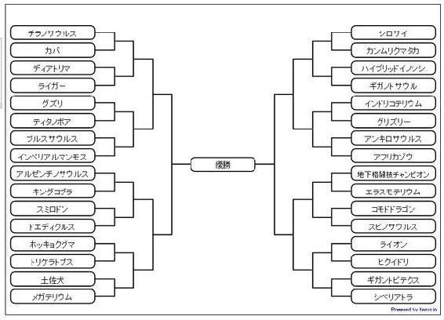

| 地球生命体最強!! オレの妹がチラノサウルス（1） (イーデスブックス) | |
| 中七七三 | |
| (2018) | |
「お兄ちゃん！ お腹すいた！ ごはんまだぁ！」
妹が尻尾を唸らせ、リビングで暴れた。
体重７トンを超える巨体のため、頑丈にできたリビングも痛みが早い。
「まてよ！ ちょっとまってくれよ！ こら！ 尻尾で壁叩くな！」
電信柱のような尻尾が唸りを上げ壁を直撃。
高張力鋼のリビングの壁が高い音を立てた。
「すいません、この牛どこにもっていけばいいですか？」
牧場から来た配達の人が、言った。ホルスタインを引っ張っている。
「あ、すいません！ そこの牛はこっちです！」
俺は配達の人に言った。体重８００キロのホルスタイン。
乳が出なくなった老牛だ。値段が安いので最近はもっぱらこれが食事の中心となっている。
「あ～、こっちっすか！ こら、アカ！ 言うこときけ！ こっち来い！」
これから食われるという自分の運命を知っているのか、引っ張られていくのを抵抗する。
なんか、ホルスタインが悲しい目でこっちを見つめている。
だが、そんなことで挫けるわけにはいかない。
これを食わせないと、俺が食われる。
「モォォォ～」
心の底にしみいる悲しい声でホルスタインが啼いた。
うちの家は毎日ドナドナ状態だった。
ようやくリビングに牛をつなげる。
ホルスタインが最後の力を振り絞って抵抗している。
「ほら、晩ごはん準備できたぞ。テレビ消して、食事の時はテレビは見ないのが決まりだぞ」
妹はテレビを見ていた。俺はしっかり妹に注意する。
そのあたりは、今は亡き父親の教えが俺に染み込んでいた。
父親は、妹が７歳の時に死んだ。
妹が、獲物と間違えて食べてしまった。それで死んだ。
３年前のことだ。
妹の食事中に、あまり周囲を動き回ってはいけない。
獲物と間違えて食われる。
母親は、妹を生んだときに死んだ。
難産だったから。
「こら！ 尻尾でリモコン押すな！ 行儀悪いんだよ！」
「うるさいわね！ お兄ちゃんは、だから彼女できないのよ」
「大きなお世話だ！」
「ねえ、友達紹介してあげようか？」
「小学生を紹介されても、俺が困る」
俺は犯罪者になりたくないし。ロリコンでもない。
まったく口ばかり達者になりやがって......
「ああ！ もう、お兄ちゃん、今日もホルスタインなのぉ！ プンスカ！」
巨大な目玉がホルスタインを見つめている。
ホルスタインは完全に観念したのか、おとなしくなっていた。
「オマエだって、結構おいしいっていってたろ？ ホルスタイン」
「なんか、最近、乳臭くって、あんまり好きじゃない」
「おま！ 最近じゃ生の牛を食わせる店なんてそんなにないんだぞ！ 生レバーだぞ」
「なんか、あきたー」
小さな前足をパタパタさせながら、妹が言った。
妹は新鮮な生餌しか食べないので大変なのだ。
昔はチラノサウルスは死肉食いだという説が主流だったが、妹をみているとそれが嘘だと分かる。
そう、俺の妹はチラノサウルスだ。
生粋のチラノサウルスなのだ。
母親が卵を産んだときは驚いた。
医者の言うには、先祖がえりというよくある現象らしい。
人間は子宮ないで進化をもう一度繰り返すらしいので、なんかの理由でチラノサウルスで生まれることもあるということだ。
俺の父親が「なんで！ トリケラトプスの方がかっこいいのに！」と医者に抗議していた記憶がある。
しかし、それどころではなくなった。
難産で、母親が死んだ。
そして、トリケラトプスのファンだった父も３年前に食われて死んだ。
恐竜に対する価値観の違いで、娘とはあまり上手くやっていけてなかった気がする。
まあ、俺は特に好みが無かったので、問題ない。
「あ！ ちょっとまて！ スマホだ！ スマホをセットする！」
俺はスマホを忘れていたのに気付いた。
「えええ！！ また食事のとこ動画、取るのぉ！ エロいんだけどぉ！」
「バカ、いいだろ？ オマエの成長記録だ！ 天国の母さんと、父さんに知らせなきゃな」
「もう、お兄ちゃんたら、早くしてよね！」
小さな前足をパタパタさせつつ、妹が言った。
「グモォォォ！！」
前足の一撃が、ホルスタインに直撃した。
体に対して前足が小さいというだけで、妹の前足は、他の生物にとっては十分凶器だった。
ちなみに前足には、５００キロ以上の物体を軽々と持ち上げるパワーがある。
ホルスタインの胴体が鋭く切り裂かれ、血飛沫があがった。
「ああ、もったいない！」
巨大な口を開けて妹がホルスタインを背中から咥えこんだ。
そのままブンブンと振り回す。
「グモォォォォ～」
ホルスタイン断末魔の叫びがリビングに木霊した。
「ああ！ もう、スマホで撮るまで待てと言ってるのに！」
俺は慌てて、スマホで撮影を開始する。
この動画が貴重な収入源なのだ。
動画に埋め込んだ広告収入が我が家の収入の全てだった。
国の研究機関が、妹を引き引き取るといってきたが、俺は拒否した。
今となっては、たった一人の俺の肉親なのだ。
妹を売ることなど俺にはできなかった。
ガリガリ、グチャグチャと咀嚼音が響く。
豪快な食事風景は人気コンテンツである。
「うーん、やっぱ、ホルスタインばかりというのも、あれか......」
巨大な口の中には、出刃包丁のような牙がならんでいる。
ホルスタインの血で真っ赤に染まっている。
「ごちそうさまぁ」
８００キロのホルスタインを食べ終わった妹はごろんとソファーの上に横になった。
特注ソファーである。
長さ１０メートル。
体重７トンを超える妹が乗っても壊れない。
だが、この態度は兄として黙っていられなかった。
「こら！ 食ってすぐ寝るな！ 牛になるんだよ！ 牛に！」
「えー！ そんなのなるわけないじゃーん。お兄ちゃんのバーカ！チラノサウルスが牛になるわけないのよ！」
小学生のくせに生意気な妹だった。屁理屈こきやがって！
しかしだ――
このまま、毎日牧場から牛を届けてもらうのも面倒だし、なんか別の食材もありかな......
「こら！ リモコンを尻尾でやるなと何度言ったら......」
ソファーに寝っころがったまま、尻尾の先でリモコンを操作して、テレビを見る妹。
「だって起きるのめんどうなんだもーん」
「女の子なんだからさ、少しはちゃんとしようぜ」
俺はぼやきながら、巨大なリモコンを抱えてテーブルの上にもってくる。
尻尾が届かないようにだ。
重いなこれ。
「なあ、オマエはなにか食べたいものあるのか？」
「うーんとね！ じゃあ、お寿司！ お寿司食べたい！」
「寿司か......」
妹のサイズからみると、ひとにぎりがの寿司がミカン箱くらいの大きさでいいか？
ご飯をいっぱい炊いて、ネタは、デカイ魚あたりなら大丈夫か。
ピラルクとか、ジンベイザメとか......
「よし！ 寿司屋当ってみるか！」
「本当！ お兄ちゃん！ お寿司楽しみ！」
ソファーの上で飛び跳ねる７トンの巨体。
さすがにスプリングが軋む音が聞こえる。
なんでも、戦車のサスペンションを応用しているというので大丈夫だと思うが。
チラノサウルスが食べればいい宣伝になる。
さて、どこの寿司屋がいいのか？
俺は、スマホで巨大魚を扱ってくれる寿司屋を検索するのであった。
しかし、この食事は大きな問題があったのだ。
スマホで検索したが、大型の寿司を作ってくれる店はないようだった。
「巨大 寿司」で検索した。
いくつか、ヒットした。
しかし、それは人間サイズで巨大なのであって、妹には小さ過ぎる。
柿の種とピーナッツのようなものだ。
妹は全長１２メートル。体重７トン。
チラノサウルスは、生きている間ずっと成長するらしいので、中学生、高校生となればもっと大きくなるだろう。
そして、次の問題だ。
妹が入れる大きな店があるかどうかだ。
寿司屋に行って、妹だけ外で食べさせるというみじめな思いはさせたくない。絶対にだ。
スマホで店を検索したが、妹が入れそうな店は、山口県にあるだけのようだった。
千葉から山口まではさすがに行けない。遠すぎる。
いまだに、日本はマイノリティーに厳しい社会なのだと実感する。
「どうすっかなぁ......」
仕方なく俺は千葉県船〇市内の寿司屋で「バリアフリー」の店を検索した。
店に電話して相談することにした。
最初の店の人は親切だった。
事情を説明すると「妹思いのお兄さんだねェ」と感心された。
たった一人の肉親なのだ。妹のためにできることはやってやりたいのだ。
この店の人は、自分の店では、できないが出張して自宅で寿司を作ってくれるサービスがあるということを教えてくれた。
寿司職人の出張だ。
なるほど、それなら、問題ない。
高張力鋼で囲まれたリビングなら、妹もくつろいで寿司が食えるのだ。
「寿司職人出張」で検索した。結構あった。
俺はさっそく電話した。
◇◇◇◇◇◇
「お兄ちゃん！ 今日の晩御飯はお寿司なんだね！」
鋭いナイフのような爪の生えた小さい前足をパタパタ振った。
うれしいと前足を振るくせがある。可愛い妹だ。
「ああ、そろそろ、職人さんが来るんだけどな」
晩ごはんというか、妹は１日１回しか食事をしない。
これは、代謝効率の違いだと医者が教えてくれた。
妹も一応、恒温性の動物なのだが、体が巨大な分、代謝効率がいい。
１回の食事量は多いが、１日食で済んでいる。
学校の給食も本当はいらない。
ただ、学校側では「食育」という観点から、食べさせようとした。
ただそれも小学校１年でなしになった。
教室で、チョロチョロ動いた子どもが妹に襲撃されたからだ。危うく食われるところだった。
チラノサウルスの食事の時に周囲でうごいては行けない。食われる。
それ以降、妹は給食を食べなくていいことになった。
以前、そのことを気にしてないか訊いたことがあった。
「昼休みが長くてうれしい！」
妹はそう言って、爬虫類の笑みを浮かべた。
いや、チラノサウルスは爬虫類じゃないか......
妹は、爬虫類扱いされると怒るので「爬虫類」は禁句だった。
しかし、そのときの妹の笑みは、兄に心配をかけまいとする精一杯の笑みだったのかもしれない。
妹にはもう俺しかいないんだ。
「すいません。寿司職人出張サービスっす！」
「あ、来た！ お兄ちゃん」
妹の尻尾が立った。
頼んでいた出張の職人さんが来た。
俺は、寿司職人さんを家に招き入れた。
「わーい！ お寿司！ お寿司！ お寿司！ お兄ちゃん！ お寿司！」
妹が興奮してソファーの上で飛び跳ねた。
７トンの巨体で、ソファーが軋み音を上げた。
戦車のスプリングなので大丈夫だと思う。
「元気な妹さんすッね！」
寿司職人は妹を見上げた。
「すいません。落ち着きなくて。小学生で、子どもだから......」
「もう！ お兄ちゃんは、すぐ子ども扱いする！ プンスカ！」
「いや、可愛いじゃないっすか」
寿司職人さんだ。
人のよさそうな。そして爽やかな――
若いお兄さんだった。
彼は、俺ににっこりと笑った......
「どうしたんすか？ 真っ赤になって」
「いえ...... あの、普通のキッチンで大丈夫ですか？」
俺は彼に訊いた。
寿司をつくるのに特別なものは我が家には無いからだ。
「大丈夫っすよ！ ネタはあらかた切ってありますし、米も炊いてもってきてるっすから」
威勢のいい寿司職人さんだった。溌剌とした、まるで初夏の風のような空気をまとっている――
「さあ、早くシャリとネタ運んで！ お客さん待たせちゃいけねーっすよ！」
職人さんは外でガタガタやっている人に命令した。
雑用係か何かの店員が、５～６人いた。
ミカン箱くらいあるようなアルミのケースを何個も運び込んでくる。
「こっちが、シャリで、こっちがネタっす」
きちんと説明してくれた。
そして、巨大なまな板のような板が持ち込まれた。
工事現場で使われる合板のようなサイズの板だ。
「じゃあ、握りますんで！」
「え、握ってくれるんですか？」
このサイズのおにぎりを前もって作っておいて、下ごしらえだけしたネタを乗っけて終了かと思っていた。
ちゃんと握るのか......
「ちょっと待って下さい、スマホもってきますんで。あ、撮影......」
「いいすっよ！ アッシの店も宣伝になりますからねッ！」
なんという気風のいい職人なのか、俺はこの人が――
「なに、お兄ちゃんたら、赤くなってんの？」
巨大な口から牙をむき出し妹が笑いながら言った。
「ばか！ いいだろ！」
俺は他人とはちょっとだけ、恋愛対象が違う。ほんのちょっとだ。
「んじゃ、やりますか？ ネタは前もって、電話で伺っていたものでいいっすかね？」
そう言うと職人さんは流れるような手さばきで巨大な寿司を握った。
サイズで言えば、普通の雪だるまくらいある。
「じゃ、まずはジンベイザメっすね、あ、サビは、どうしますか？」
「抜きで――」
「もう、お兄ちゃんたら、子ども扱い！ 大丈夫だからね！ もう」
「分かってるね！ やっぱジンベイザメにはサビが無いといけねーや」
ニッコリと笑うと、職人さんは、容器からわさびを両手にのせ、シャリの上にのっけた。
てんこ盛りだった。こんなワサビの塊は初めて見た。
ジンベイザメの切り身がのっかり、巨大な寿司が完成。
もう一貫がにぎられた。
巨大な握り寿司二貫が板の上にならんだ。
「――」
「どうしたんすかっ？」
妹は無反応だった。
不思議そうに職人さんは言った。
アッ！ しまった！
「すいません！ 妹は動いている物じゃないと食べ物と認識できないんです！ すいません！」
俺はペコペコ謝った。
何という迂闊なことか......
寿司は動かない。一部には回転する寿司があるが、自宅では無理だ......
しかも、こんな腕のいい職人さんの寿司を回転させるわけにはいかない。
「あ～、そうなんだ。いるよねぇ、そう言う女の子は、んじゃ、アッシが動かすっすよ！」
職人さんはそういうと、握り寿司二貫をラグビーボールのように抱え、リビングをダッシュした。
「アッ！ お寿司！ お寿司だ！」
妹の前足は風を切って動く。
「うぎゃぁぁぁ！！！！」
背中から袈裟懸けに切り裂かれた職人さんが叫んだ。
「わぁぁ！！ 美味しそう！ いただきます！」
妹が巨大な口を開け、一気に職人さんごと、口に咥えた。
鮮血がリビングに飛び散る。
妹の口からはみ出た、寿司職人の脚がバタバタしていた。そして止まった。
で、口の中に消えていく。
むちゃむちゃ――
ガリガリ――
もにゅもにゅ――
妹の咀嚼音がリビングに響いた。
「わーい！ お寿司美味しい！」
妹はうれしそうに前足をパタパタさせていた。
俺の恋は一瞬で終了したが、妹の笑顔が救いだった。
当然、スマホで撮影していた。
「ねえ！ お兄ちゃん、なにみてるの？」
妹が言った。ソファーに寝転んでブンブンと尻尾だけをリズミカルに振っている。
巨大なプロペラが作り出す風切音のようだった。
その尻尾のスイング圏内に入った生物は即死間違いなしだった。
「いや、ニュースサイトみていただけ」
俺はスマホでたまたま、「小学生の好きな食べ物ランキング」というニュース記事を目にした。
今、それを読んでいたのだ。
「なあ、オマエは、好きな食べ物あるのか？」
「私は、お兄ちゃんが用意してくれたものなら、みんな大好きだよ」
にっこりと巨大な牙をみせて笑った妹。
チラノサウルなので、その顎の咬合力は３トンを超える。
地球上の現生生物では対抗不能だった。
一撃でワゴン車も噛み砕く。
そんな妹と俺は、たった２人の肉親だ。
父も母も死んでもういないのだ。
ふたりきりの家族だった。
「なあ、カレーライスを食べたいと思うか？」
そのニュース記事の１位がカレーライスだった。
「え！ カレー！ あ、男子とか、給食のときに大騒ぎになるやつね」
妹は学校では給食を食べていない。
チラノサウルスは代謝効率がいいので、１日１食でいいからだ。
そして、動いている物しか食べ物と認識できない。
さらに、食事中に周囲で動くと食われる。
だから、学校給食を食べたことは１年生の時に１回だけだ。
クラスメート１人「も」一緒に食べた。
食事中に動き回ってはいけない。
「ああ、そのカレーだ」
俺は妹を見ながら言った。妹は全長１２メートルの巨体を乗り出して、俺を見つめてきた。
その巨大な瞳が期待の色で輝いていたのが分かった。
あまり、感情を顔に出すことの無い妹なのに......
一瞬、その巨大な瞳に陰が走ったのが俺には分かった。
「みんな、お母さんのカレーが美味しいとか言うわ......」
静かに小さな前足を動かしながら、妹は言った。
少しかぎ爪が伸びすぎている。女の子だから、身だしなみに気を付けてほしい。
「お母さんのカレーか......」
俺はその言葉を口の中で転がすように言った。
生まれたときに母を亡くした妹は、母親の作った料理を知らない。
妹と８つ離れている俺は、うっすらとした記憶の中に母親のカレーライスがあった。
「カレー作るか......」
「え！ お兄ちゃん、カレー作れるの？」
「ああ、美味しいかどうかは、保障できないけどね」
そう言いながら、俺はスマホで「美味しいカレーの作り方」を検索していた。
そして、こっそりと「爬虫類に与えてはいけない餌」も検索した――
いや、ニワトリの方が近種だっただろうか？
◇◇◇◇◇◇
俺はラジコンショップに来ていた。
店員は爽やかな感じの大学生のアルバイトっぽい男だった。
「だいたい、１００キロくらいの物をのせても動くラジコンってありますか？」
「１００キロですか？ 結構ありますね。 なんに使うんですか？」
「ああ、妹の食事に―― 動かそうと思って」
爽やかな店員に真正面から見つめられ、俺は下を向いて小さな声で答えた。
「まっ、ちょっとよく分からないですけど、５ＣＣクラスのエンジンにニトロいれれば余裕じゃないですかね。モータなら、一番大きい奴で１馬力いきますね」
「はあぁ......」
あまり近くによって、話しかけられるので、ドキドキして話が理解できなかった。
俺は、店員に勧められるまま、でっかい車のラジコンを買った。
でっかいモータ付の１０分の１サイズの４輪駆動車だった。
一応、１００キロ以上のものでも動かせるらしい。
１０万円近くした。
お金の問題じゃなかった。
妹のためだった――
そして、近くのホームセンターで大きな寸胴も買った。
ドラム缶を半分に切断したくらいの大きさがあった。
ベニヤ板を買って、その下にキャスターをねじ止めした。
「ねえ、お兄ちゃんなにやってんの？」
尻尾をバランスをとりながら、俺の方に歩いてきた妹。
「ん？ カレーだよ。カレーさ！ 美味しいカレー作ってやるよ」
「本当！ お兄ちゃん！ やった！ カレーだ！ 今日はカレーだ！」
妹はドスドスとリビングの中を走り回る。床も２５ミリの高張力鋼なのだが、やはり７トンの巨体では痛みも進んでくる。
いつもはのんびりしている妹だが、最大速度は時速４０キロ以上でるんだ。
運動会ではいつもリレーの選手の候補になる。ただ、候補で止まりで選手にはなったことが無い。
妹が「私、バトンが苦手だから」と言っているのを聞いたことがある。
チラノサウルスの妹は、バトンパスが苦手なのだ。
前足が短いから。
子どもの個性とか能力をきちんと評価してくれる小学校だったらいいのにと思った。
悪しき平等主義が妹を悲しませていると思った。
美味しいカレーの作り方はネットで調べまくった。
要は玉ねぎを大量にぶち込むのが秘訣だった。
肉もブタのアバラ付のものを大量にぶち込む。
合わせて、牛の筋もいれた。
基本的に妹は肉食恐竜のチラノサウルスなので、肉は十分にいれておいた。
ジャガイモ、ニンジンもいれる。キャベツもだ。特に切る必要がないのが楽だった。
巨大な口と、あの出刃包丁のような牙なら問題ない。
なんといっても、咬合力は推定で３トンを超えるんだ。実際はどのくらいあるか分からない。
俺の妹の一番得意なことは噛みつくことなんだ。
俺は、巨大な寸胴でカレーを作った。
味見してみた。
美味しかった――
ちょっと、母親のカレーを思い出した。
◇◇◇◇◇◇
「ワーイ！ カレー！ カレー！ カレー！」
妹が小さな前足をパタパタさせ、カレーを連呼していた。
チラノサウルスの妹にとっては、生まれて初めて食べるカレーだ。
「よし行くぞ！」
俺は、プロポを操った。最大出力１馬力を超える強烈なモーターが唸りを上げた。
１０分の１、４輪駆動ラジコンカーだ。
そのラジコンカーに、ロープを付け、キャスター付のベニヤ板に結びつけた。
そのベニヤ板にはカレーのたっぷり入った寸胴が乗っている。
ゆるゆると、ラジコンカーは、ベニヤ板を引っ張って行った。
妹は動きに反応して、一気にラジコンカーに飛びかかって行った。
１０万円のラジコンカーが３トンの咬合力を持つアギトの中で粉々に砕けて言った。
圧倒的な破壊だった。
バリバリと砕け散る音が、リビングに響く。
「おまッ！ それカレーじゃない。ラジコンカーだ！！」
俺の叫びを無視し、１０万円ラジコンカーを粉砕するチラノサウルスの妹。
ああ――
妹よ、それはカレーではないのだ。
カレー動かすための、動力なのだ......
ラジコンカーを飲み込んだ、妹はこちらを見た。
「ん...... これがカレー？ なんか、思ってたのと違うけど―― お兄ちゃんが作ってくれたから、美味しい」
チラノサウルスの妹は俺にそう言った。
「いや、妹よ、それはカレーじゃないんだ。こっちなんだ......」
しかし、妹は、チラノサウルスなので、動かない寸胴を食事と認識できなかった。
「動いてないから、食べ物じゃないよ。お兄ちゃん」
妹は笑いながら言った。１５センチ以上ありそうな牙と牙の間にラジコンの配線がからまっていた。
「動かそうとしたんだけどね――」
俺は妹に、どうやって動かそうとしたのか、食べたのがラジコンカーであることを説明した。
巨大な眼球をこちらに向け、妹は俺の話を聞いていた。
「お兄ちゃん、それ動かすなら、紐を引っ張ればいいんじゃない？」
小さな、前足をスッと動かし、ベニヤ板に縛ってある紐を爪で指し示した。
俺は、紐を引いた。
チラノサウルスの妹は寸胴に襲い掛かった。
アルミニュウムの寸胴がひしゃげ、カレーがリビングに飛び散った。
「なあ、女の子なんだから、もう少しこぼさないで食えよ」
俺は笑いながら言った。
「うん、お兄ちゃん、今度はこぼさないから、またカレー作ってね！」
高張力鋼の装甲板に包まれた、俺の家のリビングに、チラノサウルスの妹の声が響いた。
明るい声だった。
「お兄ちゃん！ ３００円！ ねえ！ 早く！」
７トンの巨体でバンバンと飛び跳ねるチラノサウルスの妹。
「え？ なんでだ？ お小遣いはあげたよな？」
俺は、妹の食事風景の動画アクセス数をツールで確認しながら横目で妹を見た。
ギラギラとした眼球がこちらを見つめていた。
「違うよ！ お兄ちゃんたら！ 月曜日の遠足のおやつ！ 郁子ちゃんと買いに行くの！」
「ああ、遠足かぁ」
俺はカレンダーを見た。今日は金曜日だ。そして月曜日の日付に〇がしてあった。へたっぴな字で「遠足」とも書いてあった。
妹が書いたものだろう。
「土日があるだろ？」
「だめよ！ 郁子ちゃんが用事があるからって、この日しかないから」
郁子ちゃんは妹の小学校のクラスメイトだ。仲のいい友達らしい。
「はやくしてよ！ もう、郁子ちゃんと待ち合わせしているんだからぁッ！」
ブンブンと小さな前足を振り回しながら咆哮する妹。
「そんな、大きな声出さないでも、いまやるから」
俺は小銭入れから、３００円を出して、注意深く妹に渡した。
前足は体に比べれば小さいが、爪はアーミーナイフより鋭い。
「ありがと！ お兄ちゃん！ じゃあ行ってくる！」
頭から尻尾の先まで、全長１２メートル。体重７トンの巨体を揺らし玄関に向け突撃するチラノサウルスの妹。
まったく、ガキだな......
俺はそんな妹の後姿を見つめていた。
最近、妹も成長してきているのか、後頭部から背中にうっすらと羽毛が生え始めている。
チラノサウルスの妹は、この羽毛が気に入らないようなのだ。
「なんか、カッコ悪いぃ～」
と、鏡の前で背中を見つめは、文句を言うことが多い。
妹は、剃りたいと言っているのだが、「剃るともと羽毛が濃くなるぞ」と俺が言うと、ムスッとして「じゃあ、どうすればいいの？」と突っかかってくる。
ガサツなようでいて、やっぱり、女の子なんだなぁと俺は思ったりしている。
俺は「恐竜用の羽毛脱毛器」をスマホで検索した。まだ、そのような商品はないようだった。
「まあ、いまだ、羽毛は学説の域をでないということか......」
妹が出て行って、独りになったリビングで俺はひとりごちた。
◇◇◇◇◇◇
「色々買ってきた――！ こんなにお菓子があると幸せだよね」
チラノサウルスの妹は３００円で買ってきた色とりどりの駄菓子をリビングに広げていた。
２５ミリの高張力装甲が張られた床だった。
妹にとって、遠足のおやつの愉しみは、自宅で広げて終了だった。
遠足ではおやつを食べることは無かった。
まず、基礎代謝効率がいいので、おやつなど食べる必要がないこと。
そして、おやつが動かないので、食べ物として認識できないのだ。
こうやって、遠足を楽しみにして、おやつを並べる前日が、チラノサウルスの妹にとって一番の日だった。
一瞬、「郁子ちゃんに、妹のおやつを持ってもらって、動かしてもらったらどうだ？」と提案しかけた。
しかし、それをやると、妹は友達を物理的な意味で失ってしまう可能性があった。親友がおやつになってしまう。それはまずいだろう。
「お弁当って、美味しいのかな――」
ポテチの袋を前足で、そっといじりながら、巨大な口でつぶやくように言った。
妹は、遠足でもなんでも弁当というものを食べたことが無い。
これも、おやつと同じ理由だ。
「弁当かぁ。オマエは弁当食べてみたいか？」
妹は、「ギュン」と人間の体よりも巨大な頭部をこちらに向けた。
口からはヌルヌルとした粘液のような涎が垂れている。
もう、女の子なのに......
チラノサウルスの妹は一瞬考え、そして言った。
「え？ いいよ。だって、私は代謝効率がいいから、お弁当食べたら太るもん！ ７トンあるけど、６．５トンくらいにしたいし」
小学生の分際で生意気にダイエットかよ。
全長１２メートルを考えたら７トンはバランスとれてるだろ？
無理に痩せる必要はない。だいたい、チラノサウルスは死ぬまで巨大化するんだ。
「お弁当くらいじゃ太らんだろう」
「本当？ お兄ちゃん でも......」
やはり、ダイエット云々は、自分を納得させるための言い訳だ。
心理的「合理化」というやつだ。まったく、女の子は小学生なのにめんどくせぇ。
食べたきゃ、食べればいいのだ。
「いいから！ 作ってやるよ。土日で食材を集めればいいだろ。時間はある」
「お兄ちゃん！ うん！ やっぱお弁当欲しい！ お弁当！」
はち切れそうな恐竜の笑みを浮かべ、妹は言った。
ドガドガドガと７トンの巨体を揺らしカレンダーのところまで走って行った。
月曜日――「遠足」と書かれていたその場所に「お弁当付き」と妹は書いたのであった。そして花丸で囲む。
「まってろよ、すげぇ、弁当作ってやるからな」
俺はそんな、チラノサウルスの妹を見つめていた。
◇◇◇◇◇◇
「お兄ちゃんまで......」
「仕方なかろう。オマエの弁当大きいからな！」
「ちょっと、友達の前で『弁当が大きい』とか信じらんない！」
前足をバタバタと振り回し、尻尾を水平にブンブン振る妹。
どうやら、遠足に俺がついて来たのが恥ずかしいようだ。
まあ、学校行事に、肉親乱入は恥ずかしいとは思うが、それは耐えてほしい。
おれにとってたった一人の妹なんだ。この世で唯一の肉親なんだ。
遠足は、房総のある山。ハイキングみたいなものだ。
今、ちょうどランチタイムになっている。
小学生たちがレジャーシート引いて、弁当箱を並べていた。
「もう、お兄ちゃんたら！ プンスカ！」
そうは言っても、妹はそれほど本気で怒っていない。
俺がかなりのイケメンで、妹のクラスが騒然となっているのだ。
妹としては、悪い気分ではないだろう。
チラチラと小学生の女子が俺を見ている。
「え...... お兄さんってカッコいい......。ねえ、郁子知ってた？」
とかいう声が聞こえるが、小学生女子に言われても何とも思わん。さっぱり何とも思わん。
「おい！ マジかよ！ アイツの兄ちゃん、すげぇよ。イケメンなんてもんじゃねーじゃん」
と、男子小学生まで騒然となっている。
これには、ちょっとドキドキする。俺も赤面してしまう。
いけないことを考えてしまうかもしれん。
いや！
男子小学生が目的で、ここに来たのではないのだ。俺は。
妹の弁当だなのだ。
俺はスマホを取り出した。
動画撮影の準備をする。
「もう、ここでも撮影なの？ 本当に、お兄ちゃんは」
チラノサウルスの妹の食事風景動画は、我が家の最大の収入源となるコンテンツなのだ。
撮影しないわけには、いかない。
「えー、お兄さん、このワゴン車で突っ走ればいいですね」
耐火スーツに身を包んだ。スタントマンの男の人が言った。
鍛え上げられた体。しまった男らしい顔をしている。
「あ...... はい...... お願いします。妹に突っ込む形で......」
「分かりました。時速は、どれくらいで？ この距離だと上限８０キロくらいですけど。それでいいですか？」
大型ワゴン車だ。
１０気筒、３００馬力。市販のものでは最高水準とも言えるモンスターマシン。
「じゃあ、それで」
俺は、頬を染め、彼の提案に従うことにした。
俺は素直な男なのだ。
「了解！ じゃ行きますね！」
颯爽とスタントマンの男は、運転席に座った。アクセルを踏み込む。
ギュォォォーンとタイヤが空転し、焦げ臭い匂いがした。
嗅覚の鋭い、妹は身を低く構え、その方向を見やった。
大型ワゴン者の上には、俺の作った巨大弁当が固定してある。
動く物しか、食べ物と認識できない妹のために、ワゴン車で突撃するのである。
一瞬で加速するワゴン車。
臭いと視覚でそれを捕えた、妹――
チラノサウルスは、嗅覚に優れ、眼球の立体視能力も高い。
「アギャーーー」
時空を貫き白亜紀まで届くような咆哮を上げる、俺の妹。
頭を低くし、完全に戦闘態勢に入っている。
真正面から突っ込むワゴン車に向け、巨大なアギトを開ける。
禍々しく鋭い凶器のような牙が密集するアギトだ。
数トンある、大型ワゴン車の突撃を、７トンの巨体で受け止めた。
更に、上から一気にかぶりつく。
体に比べ小さな前足ががっちりと、大型ワゴン車を捕えていた。
フロントガラスが爪で粉砕される。
メチメリチメチ――
ガガガッガガッ――
と、車体と弁当箱の破壊音が響く。
鋼とアルミが原始の牙で粉砕される音だった。
妹の３トンを超える咬合力で、スクラップになっていくワンゴン車。
俺の弁当も一緒に食べている。
巨大、タコさんウインナーが、今妹の口の中に入って行った。
俺の弁当は旨いか？ 妹よ。
俺はスマホで妹の食事風景を撮影し続ける。
ドガァァァーーン！
爆炎を上げる大型ワゴン車。激突のショックで漏れたガソリンに火花が引火したのだろう。
運転席からは耐火スーツに包まれた、スタントマンの男が飛び出していた。
ドキドキした。
一応、無事なようだった。
すっと、立ち上がって、こっちに向かって歩いてきた。
「いや、すっごい、女の子ですよ。こんなの初めて、逸材じゃないですか。うちのプロダクションに欲しいなぁ。どうです、お兄さん？」
炎に包まれたワゴン車を破壊しながら、そして弁当を貪る俺の妹。
全長１２メートル、体重７トンのチラノサウルスだ。
「いや、妹は、ちょっと恥ずかしがり屋だから......」
これを機に、この男の人とお近づきなれるかもしれないという思いはあった。
でも、そんなことで、妹の生き方を歪めたくは無かった。
妹には好きなように、自分のやりたいことをやって欲しかった。
爆炎の中、巨体が咆哮する。
「お兄ちゃん！ お弁当最高！」
俺は、笑った。
「お兄ちゃん！ またお寿司たべたいなぁ～」
リビングのソファーに寝転がって妹が言った。
ゴロンと寝返りをうって、俺の方を見た。
ソファーがギシリと軋む音を上げた。
戦車の足回りに使用されているスプリングの軋み音だった。
「オマエ、最近大きくなったんじゃないか？」
ソファーの上げる軋み音が変わってきている気がする。
チラノサウルスの妹は全長１２メートル、体重７トンのはずだ。
この前の学校の健康診断の数字だ。
「えー！ 酷い！ 私は代謝効率がいいから太らないのに！」
「太ったとは言ってないだろ。大きくなったと言ったんだ。小学生なんだから普通だろ？」
ただ、チラノサウルスの場合、死ぬまで成長期なので、小学生とかはあまり関係ない。
「ふーん、もう、お兄ちゃん、言い方気を付けてよね！ だから、彼女できないのよ」
「バカ！ 俺は彼女なんかいらねーんだよ」
「なに格好つけて...... イケメンのくせに......」
「え、なにか言ったか？」
「ううん、何にも！ とにかく、私はお寿司が食べたいの！」
チラノサウルスの妹は前足のかぎ爪で、牙を磨きだした。
あの小さな前足は、巨大な牙に挟まった食いカスなど取るのに便利だった。
「あの、寿司美味しかったなぁ。ねえ、お寿司！ お寿司食べたい」
妹は上下にブンブンと尻尾を振りだした。
高張力鋼の床に何度も尻尾が直撃する。
２５０キロ爆弾の直撃に耐える装甲板が歪んできた。
「おま！ 家が傷むだろ！ 静かにしなさい！」
「だから、お寿司！ お寿司がいいの！」
「ったくもう...... 分かった。でも今日は無理だぞ。もう、晩ごはんの用意してあるし」
「うーん、じゃあ、明日ぁ！」
巨大な上半身をむっくりと起こし、小さな前足を上げて妹は言った。
「分かった。また寿司職人さんを呼ぶよ......」
「やったー！！」
妹は巨大な口を開けて笑った。そこから見える見える牙は、肉食に特化した鋭い刃だった。
現存生物―― どのような存在でも寸断する鋭さとパワーを持った存在だ。
「じゃあ、今日は、生きたダチョウだからな――」
今日の夕食は生きたダチョウ。最近は食用として肉も出荷されている。
体重１００キロを超えるダチョウを６羽。
檻から、リビングに放つ――
逃げ回るダチョウを次々とアギトに捕える妹。
前足の鋭い鈎爪が唸り、ダチョウの細い首が切断される。
リビングが鮮血に染まっていく。
スマホを構えた俺は、妹の食事風景を撮影するのだった。
◇◇◇◇◇◇
俺と妹は両親を失い。ふたりきりの兄妹だ。妹はチラノサウルスだ。
兄として、幼い妹の親代わりとして、好きな物を食べさせてあげたかった。
「寿司か......」
今、妹は学校に行って今はいない。俺は、ＰＣで昨日の食事動画の編集を行っていた。
「アギャァァーーーー！！」
断末魔の叫び声を上げるダチョウ。次の瞬間、妹の前足の一撃で細い首が切断され吹っ飛んだ。
ダチョウあたりでは勝負にならない。
俺は、キャスターのついたベニヤ板を見た。
妹にカレーを食べさせるために、俺が作ったものだ。
妹は動く物しか食べ物と認識できない。チラノサウルスだから。
生餌ならいいのだが、それ以外の食べもは、この板の上にのせて、ロープで引っ張ることにしている。
要するに妹用の食事テーブルだ。
以前、出張寿司職人を呼んで、自宅で妹に寿司を食べさせた。
そのときに、寿司職人が食われた。
今でも、それは俺にとって苦い思い出になっているのは事実だった。
妹は動いている物しか食べ物と認識できない。そして、一度、食べ物と認識した状態になると、周囲で動く者は全部食べ物と認識する。
それを避けるための食事テーブルだった。
「でも、これななぁ......」
ただ、このテーブルを使用しての食事は、動画としてあまりＰＶを集めることができない。
世界的な動画サイトに、妹の食事動画をアップして、そこに組み込んだ広告収入が我が家の家計を支えている。
月に五ケタを超える収入があることはあるが、妹の食事代も大変なのだ。
安易な食事は、家計を危機に叩きこむ可能性すらあったのだ。
俺はブラウザを立ち上げ、「出張寿司職人」を検索する。
ふと、脳裏にある男の顔が浮かんだ――
未練だった。
画面をスクロールさせていた俺の手が止まった。
「なんだこれ？」
俺はモニターに表示されている文字を読む。
なぜかモニターが歪んで見えてくる。
キーボードにポツポツと滴が落ちてきた。
涙だった。
俺の目にはいつの間にか、涙があふれてきていた。
俺はその店の名前をもう一度確認する。
『異世界寿司 －チラノサウルスに食われて異世界に転生して現世にカムバックした店主が握る－』
その店のホームページには、爽やかな笑顔の彼がいた――
◇◇◇◇◇◇
「いやぁ、死んだと思ったら、神様がでてきたんっすよ！」
変わらなかった。爽やかな笑みを浮かべ寿司職人さんは言った。
妹はまだ学校から帰ってきていない。
俺は、すぐに「異世界寿司」に電話して、話しをした。
そして、事前に打ち合わせをしたいと言って、彼を自宅に呼んだのだ。
俺は、ドキドキして彼の顔をまともに見ることができなかった。
「神様ですか......」
「そうっすよ！ なんでも、爆笑できる面白い死に方をすると、転生できるらしいんっすよ」
「そうなんですか」
「ええ、それで、異世界？ あれっすよ、中世のヨーロッパ風の世界ですね。ゲームとかでよくある。剣と魔法の世界っすよ―― 転生しちゃいましてね」
彼は俺の出したお茶を口に運んだ。
俺の中で、その湯呑は永久保存となることが決定した。
「大変だったですね。それは......」
「まあ、色々ね。そこは異世界っすからねぇ。ま、そこでもアッシは寿司職人としてしか生きられませんでした。不器用な男なんっすねぇ～」
そう言って笑いながら、頭をかいた。
なんと魅力的な笑みなのだろうか。体の芯が熱くなってきた。
しかし、そうじゃない。
俺が彼を呼んだのは、俺のためじゃない。妹のためだ。
チラノサウルスの妹のためだ。
「で、妹さんに、美味しくて珍しい寿司を食べさせたいと......」
「そうです。どうしても、寿司が食べたいときかないもので」
「いやぁ、いいっすよッ！ こっちも異世界帰りの寿司職人。妹さんに凄い寿司を作ってあげますぜ！」
「お願いします！」
俺は頭を下げた。これ以上、彼の顔を直視できなかったからだ。
◇◇◇◇◇◇
「わーい！ お寿司だ！ どんなお寿司なの？ 私、ジンベイザメすきーー！」
チラノサウルスの妹は前足をパタパタと動かし、満面の恐竜の笑みだった。地上最強の捕食獣の笑み。
「はは、妹さん、中々、通だね。こりゃ、握る方も緊張するっすよッ」
爽やかな笑顔で寿司職人さんは言った。
「あの～ 今日は店員さんはいないんですか？」
リビングにはシャリが運び込まれていたが、ネタが見当たらない。
それに、弟子らしき、店員は、帰ってしまった。
「あ、もうアッシ一人で大丈夫なんで――」
そう言うと、寿司職人さんは、一歩前に出た。
両手を水平に伸ばし、目をつぶる。
「アーガリ アガーリ トロ ウニ イクラ―― 冥府の王にして多重次元の支配者よ、我が魔力を贄とし、今ここに、望みし、巨獣を召喚せし事を願う者なり――」
なんか唱え出した。
足もとに、青く輝く魔法陣が展開されていく。青白い光がリビングの中に満ちていく。
「ああ！ すっごい！ なにこれ？ 魔法みたい！」
チラノサウルの妹が叫ぶ。ビリビリと周囲の高張力鋼の壁が震える。
「ヘイ！ ケルベロス！ 一丁ぉぉっす！」
「シギャァァァアアアアアアアアアアアアアアアアア！！」
碧い魔力光に包まれて、地獄の番犬と称されるケルベロスが現れた。
「え、アッシも異世界で色々握りを研究しまして、向こうじゃ、モンスターを握ってたんすよ――」
呪文を唱え終えた寿司職人さんが言った。
召喚寿司職人さんだった。
「アギャァァァァ～ ヤヤアアアアアアア！！！」
ケルベロスの三つ首が吼えた。
それは地獄の底から響き、耳にするだけで人の根源的な恐怖を呼び覚ますものだった。
「あらよっと！」
寿司職人さんは、米を手に取ると、あっという間に巨大な握りを作り上げた。
米俵よりでかい。
魔力で空間をコントロールしているようだった。
「サビはありっすか？」
「当たり前よ！ 子どもじゃないんだから」
「さすがっすね、お嬢ちゃん」
べっとりとワサビがのっかる。
そして、寿司職人は、すばやくケルベロスを捕まえると、板の上に置いたシャリの上に置く。
ケルベロスは腹の下にシャリをくっつけられ足をバタバタしだした。
「ほら、一丁！ ケルベロスの握り
「わーい美味しそう！！」
妹は腹の下にシャリがついているケルベロスを見やった。
ケルベロスの３つの頭も妹をみやる。
「グルグルリュゥゥゥウゥゥーー」
低いうなり声で妹を警戒している。円を描くように、妹の攻撃制空圏外を、まわっていた。
妹は頭を低くし、腹の底に響くような唸り声を上げていた。妹の本気の構えだった。
俺はスマホの録画を開始した。
妹の原始の咆哮が、リビングを支配し、時空を貫く。
ケルベロスの幻想の叫びが現実を突き崩す。
一瞬だった。
ケルベロスも、妹の前には寿司ネタにしかすぎなかった。
もちゃもちゃ――
ぐちゃぐちゃ――
はむはむはむ――
妹の咀嚼音が響く。
ケルベロスの肉片と血がリビングに散乱している。
「いい食べっぷりすね。次はなにを握りますかい？ ドラゴンでいきやすか？」
爽やかな、寿司職人さんの声。
永遠にこの時が続けばいい――
俺は思った。
「お兄ちゃん、ラーメンって美味しい？」
俺の食べているラーメンを見ながら妹は言った。
妹の口からダラダラと粘液が垂れている。大量の涎だった。
「これは、俺のだぞ。オマエは代謝効率がいいから、いらないだろ？」
「えーでも、なんか美味しそう。いい匂いがするし」
チラノサウルスの妹はドーンとソファーから立ち上がり、リビングに着地。
７トンの巨体の衝撃に高張力鋼の床が軋んだ。
嗅覚に優れた捕食獣である妹は、食べ物の匂いに敏感だった。
そのため、俺は俺専用の防護用の檻に入ってラーメンを食べている。
自分の部屋で食べても、嗅覚の鋭いチラノサウルスの妹は、部屋までやってきてしまう。
それならば、見えるところで食べた方がよかった。
父と母が亡くなり、俺と妹はたった２人の肉親だった。少しでも一緒にいてあげたいという思いがあった。
「ズズズズズー」と俺がラーメンをすする音。厚めのチャーシューを口に入れた。
インスタントラーメンに、スーパーで買ったチャーシューだが、結構旨い。
「豚肉の臭い―― それに、鳥ね。それは鳥ガラね...... あ、海鮮系出汁の匂いもするわ」
俺の妹の嗅覚は抜群だった。さすが、捕食獣だった。
呟くようにチラノサウルスの妹は言うと、巨大な頭を低く構えた。
小さな前足をガードを固めるように畳み込む。
ブンブンと尻尾を左右に振りだした。
尻尾のリズムに合わせ、上半身も振り子のように揺れ出した。
妹の本気の構え。地球の歴史が始まってから、ＤＮＡの生み出した地上最大の捕食獣の戦闘のポーズだった。
全長１２メートル。体重７トンの繰り出す突撃だ。
「シギャァァアアアアアアアアアアアアアアアア！！！！」
白亜紀の巨大肉食獣の咆哮が２１世紀の空間をビリビリと振動させた。
俺の家のリビングは防音も完ぺきなので、近所迷惑にはならない。
太い後ろ足が床を蹴った。
７トンの巨体を最大時速４０キロで疾走させるパワーユニットが爆発的なエネルギーを生み出していた。
ガゴーン！！
リビングの中に設置してある俺専用の檻に頭から激突した。
チタンが配合された、特殊鋼で作られた俺専用の食事用の檻がビリビリと音を立てる。
「ガァァァァアアアアアアアアアア！！」
巨大なアギトを開け、檻に食らいつく、チラノサウルスの妹。咬合力は３トンを超えるが、さすがにこの檻の破壊は無理だった。
長さ１５センチの妹の巨大な牙が、ガチガチとチタン鋼の檻に当たる。
結構深い傷ができているが、壊れるほどではない。
小さな前足が、檻の隙間から中に伸びてくる。
俺の顔の近くまで迫ってくる。
まるで、千枚通しの先のような爪をもった前足がブンブンと唸りを上げる。
俺はドンブリをもって、少し下がった。
くるっと７トンの巨体をターンさせる妹。しなった尻尾が檻に叩きつけられた。
鋼がひしゃげるような音が響く。しかし、檻はなんとか耐えきっている。
最近パワーップしている妹のことを考えると、そろそろこの檻も強化する必要があるかと考えた。
俺はドンブリの中に残ったスープを全部飲んだ。インスタントでも手間を掛ければ、結構上手いラーメンができる。
「ごちそうさまでした」
「あーー！！ お兄ちゃん全部食べちゃったのぉぉ！ ずるいぃぃ！ 私もラーメン食べたい！」
小さな前足をバタバタと振り回し、原始の咆哮を上げるチラノサウルスの妹。
「だって、オマエの分作っても、動かないと食べられないだろ？」
「しょうがないじゃない！ チラノサウルスなんだから！ 動かないと食べ物じゃないの！」
妹は動かない物は食べ物と認識できない。そして、一度食べ物と認識してしまうと、周囲で動く者は全て食べ物と認識されてしまう。
まったく、お嫁に行ったらどうするのか...... いや、そんな心配は早いか。まだ妹は小学生だ。
しかし、妹もいつかお嫁に行ってしまうのか......
その考えを振り払うかのように俺は頭を振った。
「ねえ！ 今日の晩御飯はラーメンだからね！ ぜったいだからね！ プンすか！」
小さな前足をブンブンさせながら言った。
仕方ないか......
◇◇◇◇◇◇
「インスタントでもいいだろ？ 俺が作ってやるのに」
「いやーー！ せっかく食べるんだから、お店のラーメンが良いの！ お店！ お店じゃないと嫌なの！」
というわけで、俺と妹は外食することになった。
まあ、船〇駅前まで行けば、妹の巨体でも入れるバリアフリーのラーメン屋はあるだろう。
自宅から駅までは歩いて１０分くらいだ。
妹が本気だして走れば、１分で着く。
「あああ！ お兄ちゃん、本！ 本買って！」
妹が本屋の前で騒ぎ出した。
「ラーメン食べるんだろ？ それに、本じゃなくて漫画だろうが......」
「漫画も本なの！ お兄ちゃんのバーカ」
「分かったよ。でも、それは食べた後な」
「分かったーー！ 約束」
「ああ、約束だ」
漫画は買ってもいいが、食事の前に買うと、読みながら食べるという行儀の悪いことをしかねない。
食事のマナーはしっかり守って欲しい。女の子なんだし。
親代りの俺としては、そういったとこまで考えてしまう。
〇橋駅前にはラーメン店がいっぱいある。全国展開するチェーン店もあるし、旨い店もある。
駅ビルの中には、ラーメン専門店街があるくらいだ。さすが千葉県の第二の人口を誇る６０万人の中核都市だった。
しかし......
小一時間、駅前を歩いた俺たちはガックリと肩を落としていた。
「どこも小さい......」
妹の声に元気がなかった。どの店も小さく、全長１２メートルで７トンの妹の巨体が入るのは難しそうだった。
俺と妹は夜の船〇の街をトボトボと歩いていた。
俺の考えが甘かった。
妹の入れる店が一つくらいあるかと思っていたのだ......
「あれ？ どうしたんっすか？ こんなところで」
聞き覚えのある爽やかな声がした。
寿司職人さんだった。
「あ、ああの...... どうしたんですか。そちらこそ」
「いや、ダチと飲み会やる予定だったんっすけどね。急に来れなくなったとかで...... 転移魔法使える奴が、事故っちまったようなんですよ」
「ダチって、あっち（異世界）の方のですか？」
「そうっすよ。今でも時々飲み会やってまして」
凄い男の人だった。また俺の心臓がバクバク言いだした。
「で、お兄さんたちは、どうしたんすっか？」
「私、お兄ちゃんとラーメン食べるの...... でも......」
チラノサウルスの妹が力なくつぶやいた。その声には原始の生命力溢れる力強さが無かった。
こんな妹の声は聴きたくなかった。
ギュッと拳を握った。
頼りない兄の姿を、寿司職人さんに見られたのも耐えられなかった。
俺は悲しくなってきた。
「ラーメンっすか......」
寿司職人さんは、拳を口に当て、思案気につぶやいた。
「ああ、アッシの知り合いの店はどうっすかね？ 商店街の裏側ですけどね！ あんま、客はこないですが、味は悪くないっすよ」
寿司職人さんに後光が差して見えた。
俺の呼吸が荒くなってきた。
◇◇◇◇◇◇
「ここっすけどね」
寿司職人さんと一緒にそのラーメン屋に来た。
夕食時だというのに、店に客はいなかった。
確かに、ちょっと場所が悪いと思う。
これでは、よっぽど味がよくないと客は来ないだろうと思った。
ただ、この立地で商売を続けられるということは、逆に味はいいのかもしれない。
「いらっしゃーい。今、ドアを外して入れるようにするから、待っててね」
ドライバーをもった初老の人のよさそうな男の人がドアを外し始めた。
引き戸なので、全部外せばなんとか、チラノサウルスの妹でも店内に入れそうだった。
しかし、なんて親切な人なんだろうか......
「お兄ちゃん、ラーメンだね」
「ああ、ラーメンだ」
俺は、胸が熱くなった。
なんだろう。泣けてきそうじゃないか......
バカ――
「じゃ、アッシはここで――」
「待って下さい、せっかくです。ラーメン奢らせてください」
俺は寿司職人さんに言った。ありったけの勇気を振り絞って言った。
寿司職人さんは、そんな俺をみて「ニッコリ」と笑った。
俺はその笑顔に耐えられず、下をむいてしまった。バカ――
「いいっすよ！ じゃあ、奢られますか」
爽やかな声だった。声を聴いているだけで体の芯がキュッと締め付けられるような感じがした。
「はい！ 取れたよぉ！ これでお嬢ちゃんも入れるね」
店主の人が本当に人の良い笑みを見せていた。
「うん！ ありがとう！ ラーメン！ ラーメン！」
妹は７トンの巨体で弾むように店内に入った。そして期待からだろうか、前足をパタパタと動かすのだった。
「じゃあ、決まったら言ってください」
そう言うと、店主の人は厨房の中に消えて行った。
「あ！！ しまった！」
俺はガタンと椅子を倒して立ち上がった。
「どうしたんっすか？ お兄さん」
「どうしたの、お兄ちゃん――」
「忘れた―― 妹の食事テーブルを持ってくるのを忘れた......」
それはキャスター付のベニヤ板に紐をつけたものだ。
動く物しか食べ物と認識できない、チラノサウルスの妹のため、俺が作った物だ。
「お兄ちゃん......」
シュンとした顔で、俺を見つめるチラノサウルスの妹。
「ごめんなさい。私がチラノサウルスだから...... 動いてないと食べ物と分からないから......」
「違う！ オマエは悪くない！ 俺だ！ 俺が悪いんだ！ 取ってくる！ すぐとってくるから！」
俺は店を飛び出そうとした。
「ああ、動かないと、食べられないんっすよね―― 問題ないっすよ」
寿司職人さん軽く言った。
寿司職人さんは「問題なないっすよ」言っているが、そのために寿司職人さんは、一回妹に捕食されている。
異世界に転生して、こっちに戻ってきたらいいものを......
「え......」
「アッシが手伝いますよ。マスター！ アッシが手伝っていいっすか？」
「いいよー」
「んじゃ、妹さんが食べられるラーメン作りますか！」
そう言うと、寿司職人さんも厨房の奥に入って行った。
「お兄ちゃん。ラーメンだね」
「ああ、ラーメンだ」
なんか、俺はもうすでに、胸がいっぱいになっていた。
◇◇◇◇◇◇
「ギャヤァアアアアアアアアアアアア！」
それは一見、ラーメンどんぶりの集合体だった。
トンコツの良い匂いのするラーメンが入ったドンブリ。
それが無数に積み上げられ、人型となったゴーレムだった。
ラーメンどんぶりのゴーレムが店内を歩く。
それに襲い掛かるチラノサウルスの妹。
一瞬でゴーレムの腕が引きちぎられ、ズルズルとラーメンと一緒に食われていく。
「シギャァァァァ！！」
妹が歓喜の咆哮を上げた。ラーメンが美味しかったのだ――
それは、ただのラーメンじゃない。
店主さんの――
寿司職人さんの――
みんなの思いが詰まったラーメンのゴーレムなんだ。
「いやぁ、こっちの世界でゴーレム作るとは思わなかったっす...... ま、異世界で覚えといてよかった」
腕を組んで、ウンウンと頷きながら、妹がゴーレムラーメンを食べるのを見ていた。
俺はただ、スマホでそれを撮影するだけだった。
「アナタ！ ちょっと！ なにやってるんですか」
まるで、辺り一帯の空気を一気に清浄化するような声が響いた。
俺は振り向いた。
エルフだった。赤ちゃんを背負ったエルフだった。
エメラルドグリーンの長い髪が風の中を待っていた。それは幻想的な一枚の絵画の様であった。
「あれ？ オマエ、どうしたんだ？」
「アナタこそ、今日は飲み会だといっていたじゃないですか？」
「いやぁ、ドタキャンで...... あ、この人、この前話したお客さん。いい人だよ。今日も妹さんのために、ラメーンを食べさせるって」
「ああ、それは本当に......」
エメラルドグリーンの長い髪。
尖った耳。
すらりとした細く芸術的な肢体。
まごうことなき、幻想世界のエルフだった。
俺にペコリとお辞儀した。
「寿司職人さん、彼女は......」
声にして焦った。
俺は自分のその声が震えているた。
それを、寿司職人さんに気づかれてしまったかと思った。
「ああ、アッシの嫁です。あっちで知り合って、ガキできちまってね、一緒にこっちに来ましてね」
頭をポリポリとかきながら照れくさそうに彼は言った。平然tと。
「ああ、お兄ちゃん！ 美味しかった！ ラーメン美味しかった！」
ゴーレムラーメンを完食した妹が言った。
「あれ？ どうしたの、お兄ちゃん、どうしたの、泣いてるの？」
心配そうにチラノサウルスの妹が言った。大きな顔が俺の顔を覗き込む。生臭い捕食獣の息が顔にかかった。
「いや、ラーメンにコショウいれすぎた...... バカだなお兄ちゃんは......」
「なんだ！ お兄ちゃんって馬鹿だわ。やっぱり、私がずっとついてあげないとダメかも」
「バカ」
俺はただそれだけを言った。この世でたったひとりのーー
チラノサウルスの妹を見つめ。
通学路のアスファルトがドーンドーンと揺れる。
体重７トンの巨大な足が地響きを起こしている。
俺のスマホを持つ手も震える。
俺は妹のコンテンツを増やすため、隠れて撮影をしている。下校途中のチラノサウルスの妹の撮影だった。
仲良しの郁子ちゃんと数人の女子が固まって歩いている。
やはり、俺の妹がひときわ目立つ。チラノサウルスだから。
「じゃあ、また明日ねーー」
「うん！」
他の子は、家に向かって帰っていく。
最後まで同じ道を歩いているのは、妹と郁子ちゃんだけになった。
ふたりきりだった。
「なあ、誕生日はいつだい？」
唐突に郁子ちゃんの口から言葉が漏れた。
「え？ 私の？」
郁子ちゃんに話しかけられたチラノサウルスの妹がビクンと反応した。
パタパタと意味もなく短い前足を動かしている。
「確か―― そろそろなんじゃないかい？」
「うん......」
「ほう、そうかい――」
「そ、そうだよ。郁子ちゃん」
郁子ちゃんとチラノサウルスの妹が話している。
千葉県の小学校の場合、出席番号が生年月日順なので、誕生日がだいたい分かってしまうのだ。
そういえば、妹の誕生日が近い。
危うく忘れるところだった。
郁子ちゃん、ナイス！
郁子ちゃんは、小学生とは思えぬ長身だ。
身長は１９０センチを超える。ランドセルが凄く小さくみえる。
長い黒髪をツインテールにしており、地面すれすれまで伸びている。
顔立ちは、幼さが微塵もない。なんと言うか、整った顔だが、抜身の刀身のような剣呑な雰囲気のある少女だ。
細身ではあるが、その身体は十分に鍛えられているのが一目でわかる。
しなやかに動く四肢には、必要にして十分な筋肉がついていた。

（とびらの様よりいただいた、郁子ちゃんのイラストです）
「誕生日会というものがある――」
ほろりと郁子ちゃんの口から、その言葉が漏れた。
「う、うん、あるね。でも......」
「なあ、オマエさんの家じゃ誕生会をやらないのかい？」
「ううん！ やる！ やるよ。誕生日会！」
ブンブンと尻尾を振りながら、チラノサウルスの妹が言った。
向こうから走ってきた自転車が尻尾をよけながら走り抜けた。
誕生日会か......
妹の誕生日はこんどの土曜日か。あと４日だな。
しかし、友達を招いての誕生日会などやったことないな......
「ほう、そうかい――」
「うん、そうだよ！ 郁子ちゃん」
「ならば、俺も出席できるってことだよな？ 権利はあるんだろう？」
「そうだね！ だって郁子ちゃんは友達だもん！」
巨大な顎をぐぁぁッと開け、チラノサウルスの妹は言った。
「ああ、友だ...... 俺とオマエは友（宿敵）だ――」
最近の小学生女子の会話というのは、俺にはよく分からなかった。
というか、女子に興味が無い。俺は淡々とスマホの撮影をするだけだった。
「なあ――、あの公園で遊んで行かないかい？ ちょうど、人けもない」
郁子ちゃんが声をひそめるようにして言った。小学生とは思えぬ雰囲気を纏った言葉であった。
「えー、学校の帰りに、寄り道したら、怒られるよ......」
「こまけぇことをぬかすやつは、コイツで黙らせばいいんだよ」
胸の内にたまった熱い呼気を吐きだすように郁子ちゃんは言った。
郁子ちゃんはひょいと武骨な拳を顔の前まで上げた。
まるで、岩石のような拳だった。
「だから、郁子ちゃん、男子から怖いっていわれるのよ～」
「ふん―― 男子かい...... そんなに男子が気になるのかい？」
チラノサウルスの妹が郁子ちゃんの言葉で真っ赤になる。
意味もなく、短い前足をパタパタさせる。
「えーー！ でも、郁子ちゃんだって、気になる男子がいるでしょ！」
「さぁね――」
「もう、郁子ちゃん！ いじわる！」
「ふふん――」
ふたりは児童公園の中に入って行った。
ジャングルジムと砂場、滑り台のある小さな公園だ。
全長１２メートル、体重７トンの妹と身長１９０センチを超える郁子ちゃんが向かい合っていた。
「さて、小学生女子ふたりが公園にふたりきりだ――」
郁子ちゃんの全身から陽炎のような闘気がゆるゆると流れ出していた。
その闘気は、周囲の大気を硬質に変化させていくようであった。
「あそぶぜ――」
郁子ちゃんは、そう言い放つとゆらりと歩を進めた。
間合いが詰まったと思った瞬間、地を蹴っていた。
公園の土がえぐれ、爆音とともに、煙を上げた。
「もう、郁子ちゃんたら！」
ぐあぁぁあと、咢を開き、郁子ちゃんのタックルを待ち構えるチラノサウルスの妹。
「ぬぅ――」
郁子ちゃんは声を上げると、妹の牙を掴んで立ち止まった。
「危うく、噛まれるところだったぜ......」
「郁子ちゃんはすぐに、私の牙掴むんだからぁぁ～ もう！」
郁子ちゃんはチラノサウルスの妹の上あごの牙を両手でつかんでいる。
そして、ふたりの押し合いが始まった。
「さすが...... 原始の力、堪能させてもらっている」
郁子ちゃんは、嬉しそうな笑みの中で、その言葉を吐いた。
「もう！ 郁子ちゃんは！」
チラノサウルスの妹はそう言い放つと、くるっと頭を持ち上げる。
「ぬむッ！」
１９０センチを超える小学生の郁子ちゃんが天に向かって持ちあがる。
妹は、首を振り回し、とうとう郁子ちゃんが手を離した。
吹っ飛ばされた郁子ちゃんは、回転しながら地面に着地した。
その顔には喜悦の色が合った。
ニィィーと笑みを浮かべる。
「まだまだ、これからだ――」
その言葉を待たず、７トンの巨体が突進した。爆音をあげ、突っ込むチラノサウルスの妹。
妹は巨大な体をターンさせた。全長１２メートルの半分近くを占める尻尾が唸りを上げる。
電信柱の太さをもった巨大な筋肉の塊が、小学生女子目がけ、振り下ろされようとしていた。
ガッツ！！
妹の尻尾が受け止められていた。
郁子ちゃんが、三戦（サンチン）の構えから、十字受けで妹の一撃を止めていた。
「もう、早く帰らないと、お兄ちゃんに怒られちゃう！」
チラノサウルスの妹が原始の咆哮を上げた。
「ふふん、今日はこんなところかい――」
郁子ちゃんは、スカートについた砂をパンパンと払った。
「じゃあ、誕生日会の話、楽しみにしているぜ」
郁子ちゃんは口元に笑みを浮かべ言った。
「う、うん......」
「男子か......」
ぽつりと口の中で転がすように、郁子ちゃんは言った。
「男子？」
「ああ、男子だ――」
「男子がなに？」
「誕生日会に呼べばいい――」
ほろりとその言葉をつぶやく郁子ちゃん。
「そんな...... 恥ずかしいわよ！ でも......」
「いいぜ、俺が力になってやる――」
ポンポンと郁子ちゃんはその腕で、妹の鼻先を軽くたたいた。
フンッと、妹は捕食獣の呼気を鼻から吹き出す。
俺は、そんな二人を見つめ、スマホの撮影を続けていた。
そうか――
男子か――
男子小学生か――
そうかい。
そういうことかい。
俺の胸の内に熱いなにかが生じていた。
それは歓喜だったかもしれない。
それとも、別のなにかであったかもしれない。
それをどう呼ぼうと、俺は構わなかった。
とにかく――
俺は、盛大な誕生パーティを準備することを誓った。
「お兄ちゃん...... あのね......」
小さな前足をモジモジさせながらチラノサウルスの妹が言った。
たった一人の俺の肉親。俺の大切な妹だ。
「なんだ？ お小遣いか？」
知っていて、とぼける俺。
巨大な頭部を下に向け、ブンブンと頭を振る妹。
「ううん、ちがうの。あのね...... お兄ちゃん」
「誕生日のことか？」
「え？ お兄ちゃん！」
「誕生日会...... うちで開くか？ 友達も呼んでさ」
俺はポツリと言った。
「本当お兄ちゃん！ どうして！」
ガバッと巨大な顔を持ち上げ、ぐぉぉっと口を開けるチラノサウルスの妹。
１５センチの牙がぬめる様な光を放っている。
「可愛い、妹のことだ。分かるさ」
「お兄ちゃん......」
小さな前足をプルンプルンと震わせながら、妹は言葉を探して口ごもる。
その小さな言語中枢は、適当な言葉を思い出せないでいるようだった。
「で、何人くるんだ？ パーティの準備をするにも、人数が分からんとなぁ」
「うん、でも...... 郁子ちゃんは来るけど、他は分からない」
少し首を傾げ、考えるようにして妹は言った。
妹には、郁子ちゃん以外、それほど親しい友達がいないのかもしれない。
やはり、チラノサウルスだからだろうか？
俺はぎゅっと歯を食いしばった。
「男の子は？ 男の子の友達でもいいんだぞ」
「やだー！ お兄ちゃん！ 男子とか！ 男子やだー！ 乱暴だし！ 掃除サボるし！」
激しく前足を振り、尻尾もバタバタさせる。高張力鋼で囲まれたリビングにガンガン尻尾が当る。
「男子は呼ばないのか？ いいのか？ それで」
「郁子ちゃんが...... なんとかするって。私はいいって言ったのに......」
ボーンと、ソファーに身を投げるようにして座ったチラノサウルスの妹。
体重７トンの衝撃に、ソファーのスプリングが激しい軋み音を上げる。
「友達にまかせっきりじゃなくて、自分でもやった方がいいな」
「どーすればいいの？ お兄ちゃん」
「招待状を書いた方がいいな。男子とか女子とか関係なく、友達に招待状を書くんだ」
ビシッと指を立て、俺はアドバイスした。兄として当然であった。
男子小学生が我が家にいっぱいやってくることを期待したわけではない。
断じて違う。天地神明に賭けて違う。純粋に妹をも思う気持ちだった。
「うん！ 私書いてみる！ ねえ！ 画用紙！ 画用紙は？」
「ああ、あるぞ！」
「用意が良いね！ お兄ちゃん」
「当然だな」
妹は、色鉛筆とクレヨンをもって腹ばいになって、画用紙に招待状を書きはじめた。
女の子らしい、花とか人形みたいな人物画を書いていく。
フンフンと、捕食獣特有の荒い鼻息がリビングに響いていく。
◇◇◇◇◇◇
「酷い...... 誰がこんなこと......」
お下げ髪の女の子がつぶやくように言った。
俺は、妹の学校の教室にいた。
菱星インダストリー製の「光学迷彩スーツ」を着こみ、教室のロッカーのところにうずくまっている。
妹を見守るため、購入したものだ。バッテリーの関係で、２時間ほどしか持たない。
お昼休みから、教室に忍び込み、状況を観察していた。
事件が起きた。
妹の作った「お誕生会招待状」がグチャグチャにされ、ゴミ箱に捨てられていたのだ。
１枚ではない何枚もだ。妹が一生懸命書いた招待状だ。
俺は、血が沸騰しそうになった。
「男子よ！ 男子がやったんだわ！ アンタでしょ！ あの子が恐竜だからって、差別するのはアンタでしょ！」
気の強そうな女の子が、ある男子を指さして糾弾を始めた。
他も女子もウンウンと頷いている。
「いいの...... いいのよ。私が悪いの。浮かれて、誕生日会とか......」
巨体をオロオロさせながら、チラノサウルスの妹は小声で言った。
俺は飛び出して、妹を抱きかかえ、慰めてやりたい気持ちでパンパンになった。
しかし、それは出来ない。そんなことをしては、お巡りさんが来てしまう。
小学校への不法侵入だ。
俺に出来るのは、妹を見守りながら、スマホで撮影することだけだった。
最新鋭光学迷彩スーツに身を包みながら。
「ちげーよ！ 俺は！ 俺はやってねーよ！」
ちょっと尖がった感じの生意気そうなところが、いい感じの男の子が言った。
なぜか、目が泳いでいる。
「知ってることは話した方がいいぜ――」
ゆらりと巨体が椅子から立ち上った。
身長１９０センチを超える小学生の女子、郁子ちゃんだった。
長いツインテールが揺れる。白い花のついた髪留めだ。
教室のタイルを踏みしめ、ゆっくりと郁子ちゃんが歩を進めた。
男の子の間合いに入った。
そこからであれば、どのような突きであり、蹴りであっても一瞬で届く。
そのような間合いであった。
「川越......」
口の中で転がすように、郁子ちゃんはつぶやいた。
その男の子の名前だった。
「俺は耳が良くてね......」
ポカーンとする川越君。その顔は子どもらしく、ちょっといい感じだった。
そして、ハッとして下を向いてしまう。
「な、なんだよ？ いったい？」
口をとがらせながらも、心なしか声が震えている。
「言っている意味が分かるかい？」
「だから、なんだよ？」
「俺の耳は、１０ｋｍ彼方の針が落ちる音も聞き分けるってことさ」
何気ない風に郁子ちゃんは言った。その言葉がゆるゆると教室の空気の中に溶け込んでいく。
「てめぇ！！ 郁子！ この巨大女が！」
いきなり、今時珍しいレベルの肥満児が絶叫した。
「ふふん、俺はまだ何も言っちゃいないぜ―― いいのかい？」
「て、てめぇ...... この爬虫類女と巨大女がぁ......」
呟くように肥満児が言った。
その声を聴いて、チラノサウルスの妹がビクンと反応する。
妹は爬虫類と呼ばれるのが最も嫌なことなのだ。
チラノサウルスは爬虫類じゃない。恐竜だ。そして、恐竜は爬虫類ではないのだ。
体に対し垂直に生えた脚がそれを証明している。
「おい？ もう一度いいってみな？ なんだって？」
ゆらりと、郁子ちゃんが更に間を詰めた。
その指を、肥満児のあご関節に当てた。
「は...... はちゅう――」
肥満児はその言葉を最後まで言うことができなかった。
郁子ちゃんは、男の子のあご関節を掴んだまま、その身体を真っ直ぐ持ち上げていた。
「俺のことを、言うのはかまわん―― だが、友（宿敵）のことを言うのは許さん」
ギチギチとあご関節の軋む音が聞こえてきた。
肥満児はガクガクと震えながら、ポロポロと涙をこぼしている。
やれ！ 郁子ちゃん！ 俺の妹をデスる奴は万死に値する。それがたとえ男子小学生だったとしてもだ。
心の中で、応援しながら、スマホで撮影する俺。
「やめてくれ！ 郁子！ 俺が、俺が止めなかったのが悪いんだ！」
川越と呼ばれた少年が叫んだ。郁子ちゃんの腕にしがみ付いた。
「ふふん、優しい男だな――」
郁子ちゃんはその顔に獰猛といっていい笑みを浮かべ、ゆっくりと肥満児を下ろした。
そして手を離した。
肥満児はその場にへたり込んだ。
「招待状を捨てろと言ったのは、このデブだ。川越は、必死に止めようとしていた...... なあ、川越よ」
ポンポンと川越君の肩を叩く郁子ちゃん。
「バカ野郎...... そんな......」
顔を赤くして、下を向く川越君。
可愛い奴だ。なんと可愛い奴なのだ......
ああ、男子小学生もいい。それはいいかもしれない。俺は思った。
「なあ、良い男子だな―― 川越よ。なあ、オマエさんもそう思わないかい？」
郁子ちゃんの言葉に、俺の妹と川越君は真っ赤になっていた。
「ふふん――」
郁ちゃんはニッコリと笑った。
◇◇◇◇◇◇
「ハッピバスデーテゥーユー♪ ハッピバスデーテゥーユー～♪」
リビングに歌声が響いている。
妹の友達だ。
あの、川越君も来ている。他にも、可愛い男子が来ているのが俺の胸をキュンとさせている。
「みんな本当にありがとう！！」
チラノサウルスの妹が言った。
「じゃあ、ケーキ入場！」
俺は言った。そしてスマホを構える。
じゃじゃじゃじゃジャンじゃ！ じゃじゃじゃじゃジャンじゃ！
懐かしのスタン・ハンセンの入場テーマ曲がかかった。
登場する郁子ちゃん。
スク水姿に、全身に生クリームをまぶした女子小学生だった。
すっと伸びる四肢には十分な量の生クリームが乗っかっている。
郁子ちゃんの身長１９０センチの巨体がしなやかに動く。
「フィィィーーー！！」
人差し指と小指を突き立て、雄たけびを上げる郁子ちゃん。
その姿は生きたバースデーケーキだった。
鉢巻き姿に、妹の年齢の数だけの、ろうそくを縛り付けている。
その炎がゆらゆらと揺れていた。
すっと、妹の前に立つ郁子ちゃん。
美麗であり鍛え抜かれた肢体がそこにあった。
「いいぜ、今日は、俺はケーキだ。オマエさんの本気を出していいんだぜ」
「郁子ちゃん......」
声を詰まらせるチラノサウルスの妹。
「泣くな、バカ――」
優しげな郁子ちゃんの声が響いた。
「じゃあ、行くぜ！ 本気だ！ 誕生日おめでとう！」
「うん、郁子ちゃん！！ 本当にありがとう！！」
俺に家のリビングに２匹の巨獣の叫びが響いた。
それは、永遠の友情の誓う叫びでもあった。
「テコ入れが必要かもしれんな......」
俺はゴーグルアナリスティックの画面を見ながら、ひとり呟く。
俺の妹はチラノサウルスで、俺はニートだ。完全に無職。
それで、チラノサウルスの妹の食費をどうやって稼いでいるかというと、動画コンテンツなのである。
世界最大の動画サイトに、妹の食事風景などの、動画コンテンツをアップ。
そして、それに広告を挟み込んで、その収入で暮らしているのだ。
最近、どうも妹の動画のＰＶが伸びない。
ＰＶが伸びないということは、広告収入も減ってきていることを意味する。
実際に、その状況をリアルタイムで見れる「ゴーグルアナリスティック」は芳しくないデータを展開していた。
「お誕生会は、ドンビキの内容だったのかな...... 行けると思ったのだが......」
最新のコンテンツは、妹の誕生会の動画だった。
妹の同級生であり、親友の郁子ちゃんがケーキ役を買ってでてくれた。
身長１９０センチ以上の大きな女子小学生だ。
見た目は、スーパーモデルのような美形。
長いツインテールで、隙の無い容貌をしている。すらりと長い四肢には、必要にして十分な筋肉がついている。
もし、郁子ちゃんが男の子だったら......
そう思わずにはいられない逸材だった。
その郁子ちゃんが、スク水で、全身に生クリームを塗って登場。
チラノサウルスの妹が、郁子ちゃんが頭に巻いていた鉢巻きに刺していた蝋燭を吹き消したところから、盛り上がっていく。
郁子ちゃんの狂ったような、突きや蹴りのラッシュを全くよけようともしないチラノサウルスの妹。
そして、郁子ちゃんを大きな顎で咥え、生クリームをペロペロ舐める。
巨大なアギトから逃れようと、暴れる郁子ちゃん。
１５センチの牙のため、郁子ちゃんの全身が切り刻まれていった。
このお誕生会の後、郁子ちゃんは全身血まみれだった。
スク水がところどころ破れ、小学生女子の柔肌が露わになっている。
「ふふん、こんなものは、唾つけれとけば治るんだよ――」
妹のよだれでドロドロになった郁子ちゃんは、こともなげに言った。
こんな感じの動画だったのが、イマイチ反応がよくない。
郁子ちゃんは、かなり魅力的だろうと思うのだ。俺には女の子の魅力はよく分からないが、まず美形であることは間違いない。
ツインテールの小学生女子。
スク水で、しかも破れて柔肌露出。
しかも、俺の妹は最強のチラノサウルスだ。
「なぜだ？」
これだけ、訴求力の強い要素が混じりながら、ＰＶが伸びない原因を考える。
「飽きられているのか...... やはり、チラノサウルスの食事だけでは弱いのか...... やはり、ネットは『嫌韓ネタ』がないとダメか...... しかし、広告は民族差別を孕む内容はＮＧだ...... とくに、ゴーグルは、事実でも差別認定される......」
俺は、ネガティブな考えに襲われる。
もし、このまま広告収入が得られないと、妹の食費を賄うことができない。
最悪の場合、国の機関に妹を渡してしまうことになってしまう。
それは出来ない。兄として絶対にできないことだった。
ネットだけではなく、グッズ販売にも力をいれるべきなのか......
以前、妹のキャラクターグッズ展開を打診してきたメーカがあった。
フィギュアや抱き枕などだ。
ただ、自分の妹が、そのようなヲタグッズとなるのは、どうにも許せないものがあった。
俺の可愛い妹を抱き枕にするのはためらわれる。
「どうしようか......」
俺はパソコン用の椅子にもたれかかり、ひとり呟くのだった。
◇◇◇◇◇◇
ピンポーン。
「お兄ちゃん、お客さんだよ。誰か来た――」
チラノサウルスの妹がスマホを弄りながら言った。
誕生日に買ってやったスマホだ。
チラノサウルスの妹でも操作できるように、前面のガラスが強化テクタイトになっている。
アイスピックのような前足の爪でも傷がつかない。
「お前でてくれよ」
「いやー！ スマホ弄ってるから、だめー！」
全長１２メートルの巨体をソファーに横たえて、チラノサウルスの妹が言った。
小さな前足でスマホを操作しているチラノサウルスの妹。
ＬＩＮＥでも見ているのだろうか......
「しょうがねーな......」
俺は、インターフォンのところまで行った。
カメラ付きのインターフォンだ。
「どちらさまですか？」
「あー、文部科学省の者です」
「はぁ？」
確か、妹のことを狙っていたのは、防衛省だったはず......
なんで、文部科学省が？
「なんの用ですか？ 文科省に用はないんですけど」
「妹様の件で、本日はお話を伺いにまいりました」
「なんだと！！ 妹は渡さんぞ！ 国家権力の手先め！ 殺してやるぞ！」
俺は、我が家に装備された自動防衛システムのスイッチに手をかけた。
これは、俺が妹を渡さないという決意と覚悟を現すものだった。
俺が飛び級でアメリカ留学した際に得た数々のパテント収入で作らせたものだ。
文科省ごとき、三流官庁など敵ではない。
「いえ！ 違います！ 妹さんに、ぜひ参加していただきたいイベントがありまして...... その参加要請なのです！」
「イベントだと？」
「そうです！」
俺は少し考えた。国家権力といえど、一枚岩ではない。
今のところ、俺の妹を狙っているのは、防衛省だ。
文科省はとくにそのような動きをしているとは聞いていない。
「で、なんのイベントだ？」
それだけでは、役人を我が家に入れるわけにはいかなかった。
俺は、インターフォンごしに、訊いた。
「生命生誕４６億年を記念したイベントです」
「なに？」
「地球生命４６億年―― 史上最強トーナメント開催です」
インターフォンの向こうの役人は言った。
その言葉が、俺の家のリビングに響いたのであった。
俺は文科省の役人を中に入れた。
サングラスに黒服の胡乱な感じの男だ。いや、サングラスというより「黒眼鏡」という方がしっくりくる感じだ。
文科省の役人というより、愛帝グループの社員になって、「ざわざわ」言ってるのがお似合いな、そんな雰囲気の男だ。
はっきり言って、好みではない。
「お兄ちゃん。誰？ その人......」
チラノサウルスの妹が不安げにこちらを見た。
「いやぁ、あなたが、噂の...... 素晴らしい。惚れ惚れします」
全長１２メートル、体重７トンのチラノサウルスの妹を見上げ、役人は言った。
「おい！ 妹をあまりジロジロみるな、女の子だぞ」
「ああ、すいません。あまりに見事な巨体...... 溢れんばかりの原始の息吹を感じました」
「やだーー 変態！ エッチ！」
チラノサウルスの妹はドタドタとリビングの中を走り、ソファーに座った。
高張力鋼の床が軋む。
「まあいい、で、そのトーナメントってなんだ？」
俺はリビングにある椅子に座った。
役人は、俺がいいと言ってもいないのに、勝手に空いている椅子に座った。
ずうずうしい役人だが、心の広い俺は許す。
「地球に生命が誕生し、今年で４６億年になります」
「なんだそれ？ 約４６億年じゃないのか？」
「いえ、ぴったり４６億年なのです。最近の科学技術はそこまで精度を上げているのです」
クイッとサングラスを指で押さえながら、文科省の役人が言った。
「誤差もないのか？」
「今年の８月８日で、ぴったり４６億年です」
まあ、釈然としないものはあったが、そんなことで反論して話を長くする気もなかった。
俺は本題に入る。
「ふーん、で？ なんでトーナメント」
「えー、この地球生命誕生４６億年を記念しまして、史上最強トーナメントを開催することになったのです。真の最強生物を決めるトーナメントなのです！」
「ほう」
「世の中には、アフリカゾウが最強である。いや、ホッキョクグマだ。いやいや、恐竜に比べたら、現生動物など物の数ではない...... 様々な意見があるのです。文科省としては、科学的にその疑問に答える義務があります。よって、地球生命誕生４６億年記念しトーナメント開催なのです」
バーンと椅子から立ち上がり、拳を握りしめ力説する役人。
「意味が分からん......」
「最強は、チラノサウルスに決まっているのです。妹さんこそ、地球４６億年の生命進化が生み出した最強のプレデター！ 地上最強の生命体なのです！ そのパフォーマンスを世界に見せつけるのです！」
「お兄ちゃん、この人なに言ってるの―― 私、分かんない」
チラノサウルスの妹はソファーに座って、小さな前足をパタパタさせていた。
１．５メートルを誇る巨大な頭部を振りながら、顎をガ――ッと開ける。
ぬめる様に光る１５センチの牙がびっしり並んだ顎だ。
「妹さん！ トーナメントに参加して、チラノサウルス最強を証明しましょう！ 『チラノサウルスは意外に弱いんだよｗｗｗ』だとぉ、次長のクソがぁぁ！」
プルプルと拳を震わせ、黒眼鏡の男が言った。
なにこいつは、興奮しているのだ？
「私よわくないもーん！ 男子にだって負けたことないしぃ！」
当たり前だ。俺の妹を負かす男子がいたら、俺は惚れてしまうよ。
そんなものはいるわけがない。
「世界中の先祖がえりした人たちを集め、最強を競うトーナメントです。妹さんにもぜひ参加して欲しいのです」
「うーん......」
俺は腕を組んで考える。
「お兄ちゃん...... 私でたい！ 私弱くないし！」
妹もやる気になっている。
最近、動画コンテンツのＰＶが伸び悩んでいるのもある。
もし、このトーナメントの......
「このトーナメントの動画配信を俺に独占させてくれるなら、考える」
俺はビシッと言った。この役人が全然俺の好みではないので、俺は強気だ。
「ああ、いいですよ。独占ＯＫです。人権団体が煩いのでテレビ放送もありません」
「よし！ それでは、契約か覚え書の締結は、後々するとしてだ...... でるか？」
俺はチラノサウルスの妹にその意思を再確認した。
バーンと大きな音をたて、尻尾を壁に叩きつけたチラノサウルスの妹。
そして立ち上がる。
全長１２メートル、体重７トン。史上最強の捕食獣の姿がそこにあった。
「お兄ちゃん！ 私やるー！ 面白そうだし！」
「うむ」
こうして、チラノサウルスの妹のトーナメント参加が決定した。
最強の捕食獣。チラノサウルスに勝てる生命体など、４６億年の地球の歴史の中でも存在するわけがないのだ。
◇◇◇◇◇◇
「ねー、こんな大きな船に乗るの初めてだね。お兄ちゃん！」
「ああ、でかい船だな。何万トンあるんだろう」
トーナメント前日。
俺と妹。そして、妹の希望で友達の郁子ちゃんは、トーナメント会場に向かう船に乗っていた。
大きな船だった。
船は東京湾を出港してどんどん南に向かっていた。
「陸地が見えないな――」
甲板に立った１９０センチ超の長身小学生がつぶやいた。
妹の友達の郁子ちゃんだった。
船が相当な速さを出しているのが分かる。
郁子ちゃんの長いツインテールが風にたなびいている。
「郁子ちゃん、悪いね。妹がわがまま言って」
「ふふん、いいさ、こっちも夏休みの自由研究の題材ができる」
郁子ちゃんはトーナメントを夏休みの自由研究の題材にするようだ。
確かに、色々な生物がリアルで戦うのだ。これは理科の自由研究といってなんの問題もないだろう。
「郁子ちゃん、それ私と一緒にやったことにしてよ！ 闘うの私だし」
「ダメだ！ オマエはきちんとやるんだ。ワークとか、プリントは持って来ているよな？」
俺はチラノサウルスの妹に言った。
トーナメントと夏休みの宿題は別物だ。宿題は宿題でしっかりやるべきだ。
「忘れたーー！ 家にあるーー でも、本はもってきたから、読書する」
「うーん、まあ、仕方ないか......」
どうも、妹は学校の勉強が今一つだ。
やはり脳の容量が１０００ｃｃというのは体に比べ小さすぎるのかもしれない。
捕食獣として、嗅覚、空間把握能力には秀でているが、勉強はあまり得意ではないのだ。
チラノサウルスだから。
「ほう...... あれは『メガテリウム』か。でかいな」
「ふーんだ！ 私の方が大きいもん！ 全長１２メートルだもん」
郁子ちゃんの言葉にチラノサウルスの妹が突っ込む。
その小学生離れした美しい顔に苦笑を浮かべる郁子ちゃん。
郁子ちゃんの視線の先には、巨大哺乳類、ナマケモノの系統に属する「メガテリウム」がいた。
確かに尻尾までいれた全長は妹の方がでかい。
しかし、メガテリウムは直立していたので、大きく見える。４メートルくらいはありそうだ。
頭の位置は、チラノサウルスの妹より高い。
鋭い鈎爪と、アリクイのような長い舌を持った悪夢のような巨獣だった。
「あの、鈎爪は要注意だな――」
風の中に郁子ちゃんの言葉がゆるゆると流れ出す。
ぬっと俺たちのいた場所に影が出来た。
「ああ！ すいません。あまり舷側によらないでください。船のバランスが崩れます！」
「えー、せっかくの船旅なのにぃぃ！ もうね、ずっと中にいるとか最悪なの！」
可愛らしいといっていい高い声が響いた。
俺は、声のする方向を見上げた。そう見上げたのだ。
「でかい......」
滅多なことでは動じない郁子ちゃんが言葉を詰まらせた。
俺は言葉を失う。
「すいません！ 戻ってくださいよ！ 船が傾きますから！」
黒眼鏡の文科省の役人が叫んでいた。俺の家に来た奴とは別人だったが、全員が黒眼鏡着用を義務付けられているようだ。
公務員規約なのだろうか。
「ああ！ 恐竜だぁ！ 私と同じ恐竜！ でも、小さくて可愛いのッ！」
その声の主はチラノサウルスの妹を見て、「小さい」と言い放った。
たしかに、そいつは、そう言う権利があった。
「アルゼンチノサウルスさん！ お願いします。船倉に戻ってください」
黒眼鏡の声が響く。
アルゼンチノサウルス。
全長４５メートル。
体重１００トン以上。
４６億年の地球生命の歴史が生み出した地上最大の生命体。
その姿であった――
「お兄ちゃん、あの女の子大きかったね。私より大きい女子初めて見た！」
俺とチラノサウルスの妹と、郁子ちゃんは、船室に戻っていた。
全長１２メートル、体重７トンのチラノサウルスの妹がゆったりできる大きな部屋だ。
「強いな......」
郁子ちゃんが算数のプリントをやりながらつぶやいた。
夏休みの宿題のようだ。
郁子ちゃんは真面目な女の子だ。
強いといったのは、おそらく先程であった巨大恐竜「アルゼンチノサウルス」のことだろう。
「強い？ 私の方が強いよ――！ 郁子ちゃん」
チラノサウルの妹が巨大な口を開け、前足をパタパタさせて言った。
咬合力推定３トンを超える巨大な顎だ。
「こと、戦いの場においては、体の大きさは何にも勝る要素（ファクター）となる。１００トンを超える巨体―― なまなかなものでは、あるまい」
「ああ、郁子ちゃん、そこ小数点がずれる。２５÷０．２だから、答えは、割られる２５より大きくならないとダメだよ」
俺は郁子ちゃんの算数プリントの回答に間違いを見つけた。
「ほう―― よく見ているな...... さすが、高学歴ニートということか......」
つっと、口角を釣り上げ、郁子ちゃんは不敵な笑みをみせる。
どうも、郁子ちゃんは小数点のついている割り算が少し苦手なようだった。
ガシガシと消しゴムをかけて、筆算をもう一度やりなおす郁子ちゃんだった。
筆圧の高さが半端ない。鉛筆が軋み音を上げていた。
「だけど、オマエ―― 宿題大丈夫なのか？」
俺はチラノサウルスの妹を見て言った。
「大丈夫――！ トーナメント中は読書感想文と、絵日記書く！」
鋭い鈎爪をキーキーと強化テクタイトの特製液晶画面に走らせ、スマホを弄るチラノサウルスの妹。
返事だけは元気がいい。
こんなに真面目に宿題をしている郁子ちゃんを見ていると妹が心配になってくる。
さっきから、スマホばかり弄っているし......
夏休みに入って、家で勉強しているのを見たことない。
スマホ弄っているか、テレビみているか、漫画読んでいるかだ。
おまけに、朝はダラダラといつまでも寝ているし......
注意すると「恒温性が進化の途上にあるから、寝起きが悪いの！」とか、言いわけするし。
脳容量が１０００㏄なのに、つまらぬ知識だけは身に着けている。
「じゃあ、今やれ。ちゃんと本読むか、日記書け。郁子ちゃんは勉強しているだろ」
俺は言った。甘やかすのはよくない。
「後で――！ 今、スマホ見てるから――」
「ちゃんとやれよ...... もう。俺、手伝わないからな。今年は......」
毎年夏休みの終わりには、俺は妹の宿題を手伝わされるのだ。恒例行事といってよかった。
もう高学年になろうとしているのだから、少しはしっかりして欲しいのだが。
◇◇◇◇◇◇
「大きなレストランだな」
俺はスマホで撮影しながら言った。
リアルタイムの放送も考えたが、それよりもコンテンツをまとめてアップした方が、アクセスが増えると思ったのだ。
更にだ、「地球生命誕生４６億年記念 史上最強トーナメント」は人権団体からの抗議とかでひっそり行われる。
よって、動画などの情報は俺が独占することになっている。契約もかわした。
そうなると、俺の動画を１次ソースとして、報道がなされ、「〇ちゃんねる」のニュース関連板にスレが立つ可能性も高い。
もし、そうなれば、まとめサイトに拡散し、一気にＰＶが増える。
船内のレストラン会場は広い。
報道されないにもかかわらず、大会のシンボルマークらしきものが壁に貼ってあった。
「地球」か「テラ」の頭文字「Ｔ」であろうか？
それに、地球を現した●を組み合わせたマークだった。
そして、レストラン会場には、地球の進化の歴史。その長い歴史を代表する、先祖がえりした生命体が集合していた。
「ほう、あれはシベリアトラ...... サーベルタイガー『スミロドン』まで呼んだかかよ」
長いツインテールをなびかせ、郁子ちゃんが言った。
その手には、皿にのった焼きそばがてんこ盛りであった。
「お兄ちゃん、いっぱい先祖がえりがいるね――！！」
バイキングに用意されてい松坂牛１頭まるごとを口に咥え、バリバリと骨を砕きながら食べていくチラノサウスの妹。
「まあ、いいけど、３頭も食べて、後でお腹痛くなってもしらないぞ」
「だって、美味しんだもーん、ホルスタインとかと全然違う。口の中で肉が蕩けていくかんじ！」
さすが、最高級松坂牛なのか、チラノサウルスの妹も大満足だった。
こんなものを踊り食いできるとは、さすが大きなイベントである。
「肉ならなんでもいいというのもいるようだな――」
郁子ちゃんが言った。
１９０センチ以上の長身を誇る郁子ちゃんですら、ここでは小さく見えてくる。
全長３メートルを超えるシベリアトラが、バイキングから生肉を取り、ガツガツと喰らっていた。
スミロドンもサーベルタイガーと呼ばれる長い牙を生肉に突き立てていた。なんか、食べにくそうだった。
「肉食獣だけじゃないな。草食獣もかなりいる」
ぱぉぉーん！！
野生の叫びだった。アフリカゾウ。現生の地上動物では最大存在が、のし歩く。
「ふふん、雑魚が――」
凶悪なカーブを描く凄まじく長い牙がみなぎる殺意を感じさせる。
「リンゴだぁぁ！スイカだぁぁ、果物もってこんかいぃぃ！ 甘いのを食べたいのじゃぁぁ！」
長い鼻をブンブンと振り回し、食べ物を要求するアフリカゾウ。
肉の重戦車だった。
「どきな、チビ――」
「ムッ！」
アフリカゾウの背後で重低音の声が響いた。
アフリカゾウがゆっくりと振り向いた。
その巨大な頭部が影となる。
アフリカゾウはその相手を見上げた。
「インドリコテリウム...... あの、 巨大哺乳類まで...... 先祖がえりとは、ここまでの物なのか」
新生代第三紀を代表する巨大哺乳類。史上最大の陸生哺乳類だった。
体重２０トンを超える怪物だ。
俺は、その巨獣を見て言葉をもらす。
甲板で出会ったアルゼンチノサウルスよりは小さい。
しかし、肉の持っている温度、圧力は引けをとるものではなかった。
「ほう―― やるのかい？ 旧式哺乳類ごときが......」
しかし、アフリカゾウも一歩も引かなかった。
体重７トンを超えるアフリカゾウですら、インドリコテリウムの前では子犬に見える。
ブン――
インドリコテリウムの前足が唸りを上げた。
前蹴りだった。
体重２０トンの巨獣が繰り出す前蹴り。
それは爆発したかのように、アフリカゾウの額に着弾した。
骨と骨、肉と肉がはげしくぶつかり合う音が響く。
７トンを超えるアフリカゾウが、「ザーーッ」と後退した。
しかし、倒れない。額から、すっと一条の血を流しながらも倒れることはなかった。
「高くつくぜ―― この蹴りは......」
アフリカゾウは、「ニィィー」とサバンナの野生の笑みを浮かべた。
アフリカに君臨する巨大な暴君の笑みだった。
ブワッっと鼻を天高く振り上げ、一気に振りまわした。
強靭な筋肉の塊ともいえるアフリカゾウの鼻が高速で宙を切り裂く。
空気に焦げ目が出来るような一撃だった。
ガッ！
インドリコテリウムの巨大な胴体にアフリカゾウの鼻の一撃が食いこんだ。
「ほう―― 少しはやるのか？ チビでも」
バカにしたような声を上げるインドリコテリウム。
２匹の巨大哺乳類が対峙する。
ビリビリと空気が固形化するような緊張感が満ちてきた。
「もう―― やっぱり、男子って乱暴よね――！ 郁子ちゃん」
「まあな、しかし滾るのも分からぬではない」
焼きそばの青海苔を歯につけて郁子ちゃんは言った。
「ああ、まさに、地球４６億年の歴史を記念すべき、トーナメントかもしれん」
俺は、続々と集まってくる出場選手と思われるメンバーをスマホで撮影しながら言った。
シベリアトラ、スミロドン、アフリカゾウ、インドリコテリウムだけではない。
甲板で目撃したメガテリウムがゆっくりとレストラン会場に入ってきた。
現生哺乳類でも、最強の防御力を持つといわれるシロサイ。
ゾウの進化系統の中では最大を誇る生物であるインペリアルマンモス。
チラノサウルスの妹と同じ恐竜たちもいる。
ギガノトサウルス、スピノサウルスがその獰猛な姿を現していた。
「あーー！ おやめください！ トーナメント前の騒動はやめてください！」
黒眼鏡の文科省役人が、アフリカゾウとインドリコテリウムの巨体に割って入って行った。
すっと、２匹の巨獣は間合をあけた。
トーナメントの激闘――
それを予感させる空気がゆるゆると、この空間を支配してきていた。
船は島に着いた。
このようなイベントは先祖がえりした人たちに対する差別だという運動が起きかねないため、離れ小島で開催されることになっている。
真の人権、生きてゆく者の尊厳を理解していない凡俗どもがいかに多いかということだ。俺のツイッターアカウントもこの手のアホウに荒されることがある。
真の人権、バリアフリーの精神が理解される日は遠いのかもしれない。
「ほう、風が熱いな」
桟橋に降り立った郁子ちゃんが言った。熱を孕んだ海風が、彼女のツインテールをたなびかせる。
「かなり南だし、地熱も高いからね」
島の名前は「絶海硫黄島」。硫黄島の更に南にある島だ。
火山性の島で、かなり地熱が高い。
「えーー！ 凄い快適だよ！ なんで？ 暑いの？」
チラノサウルスの妹はウキウキとした感じで前足をパタパタと震わせる。
「放熱に問題はないのか？」
「そんなの無いよ！ お兄ちゃん」
「そうかぁ」
チラノサウルスの恒温性は、その巨大な肉体によって機能している。
コップのお湯よりお風呂のお湯が冷めにくいのと同じ理屈だ。
全長１２メートル、体重７トンの巨体である。
体の巨大さは、それだけ温度変化に対しては強みを発揮していた。
ただ、このようなコンディションが続けば、こんどは放熱の問題が発生しそうだった。
体の中にたまった熱をどうやって放熱するのかという点だ。
チラノサウルスの妹には、低くなりそうな体温を維持する機能はあっても、その逆はありそうになかった。
まだ進化の途上の生命体なのだ。その点、人類は強力な冷却システムである発汗機能を持っている。
まあ、そのときは妹には水でも掛ければいいか......
一応、俺は対策を頭の中で練っておく。
「えー、では皆さん、これからトーナメント会場に向かいまーす」
黒眼鏡の文科省の役人が、旗を持って選手を誘導する。
地球４６億年の歴史が生み出した、様々な陸上動物が列をなしていた。
当然、俺はスマホで撮影する。
トーナメント参加者は、とびきりの猛者揃いであることが、スマホの画像を通して実感できた。
「郁子ちゃん」
「なんだい？」
郁子ちゃんは、サ〇リオのキャラクターがプリントされているワンピースを翻し、こちらを見やった。
「妹にとって、誰が強敵になりそうかな――」
「ほう―― 気になるかい？」
「そりゃ、兄だからな」
「ふふん、良いものだな、兄妹とは――」
確か郁子ちゃんは一人っ子なのだ。
ふっと優しげな笑みを浮かべ、郁子ちゃんは言葉を続けた。
小数点のつく割り算は苦手だが、こと戦いのことであれば、俺よりもずっと詳しいと思う。
「やはり、最大の敵は『アルゼンチノサウルス』だろうな。４０メートル以上、１００トン以上の巨体。規格外といっていい――」
うーん、確かにそうだ。
サイズでいえば、自衛隊の戦車の倍の重さがある。
「ただ、『アルゼンチノサウルス』がどこまで動けるか...... もし、あの巨体でスピードを維持しているとすれば、それは悪夢といっていい」
やや釣り目の大きな瞳がその『アルゼンチノサウルス』を見つめていた。
まさに、巨獣だ。現実世界というより、円谷プロの世界に片足突っ込んでいる。
歩くたびに、地響きがする。まるで島全体が揺れるようだった。
「ある高名な空手家の言葉がある―― 牛をなぐり殺し、熊とも戦った空手家だ」
ぽつりと郁子ちゃんが言った。その言葉が南海の風の中に広がっていく。
「地上最強の獣は大アリクイである―― 大アリクイとだけは戦ってはいけない」
「アリクイ？ アリクイはいないよ。郁子ちゃん」
このトーナメント参加者にアリクイはいなかった。
多分いない。俺は列をなしている参加者を見た。
やはりそれらしい者はいなかった。
「鋭い爪、そして長い舌。奴は、大アリクイ以上の力を持っている――」
郁子ちゃんの視線の先には『メガテリウム』がいた。
長い舌をベロンベロンさせ、のそのそと歩行している。
立ち上がった頭の位置はかなり高い。
「うーん、確かにあの鈎爪は痛そうだ......」
「やはり、現生動物は厳しいかね」
「そうとも、言えまい―― 奴はやはり強い」
郁子ちゃんは、すっと指を持ち上げ、そいつを指さした。
アフリカゾウだ。食事の会場で、インドリコテリウムと揉めた現生動物では地上最大の存在だ。
確かに体重７トンは、妹のチラノサウルスと互角だ。
十分に大型選手といえた。
「奴には、古代の生命体にはない強みがある」
「え？ そんなものがあるのか？」
「ああ、ＤＮＡに刻み込まれた、科学技術をもった人類との闘争の経験―― これは、大きな力となるやもしれない」
「そうなの？」
今一、納得しきれない説明に俺は首をひねる。
「まあ、このトーナメント、生半可なものではあるまいよ」
「分かっている。でも、勝つのは俺の妹だよ」
「ああ、俺もそう思うぜ。奴は強い。誰よりもな。俺は、よく知っている」
小学生女子、郁子ちゃん。
妹の無二の親友。
力強い言葉が、南洋の島に響くのであった。
◇◇◇◇◇◇
トーナメント会場の下見と、組み合わせの発表が終わった。
そして、俺とチラノサウルスの妹と郁子ちゃんは、ホテルのような一室でくつろいでいた。
「ほう―― すべてのチャンネルが映るかよ。さらに、衛星放送までとはな......」
郁子ちゃんはテレビを見ていた。
なんか、衛星放送のアニメ専門チャンネルがあったみいだ。
小学生女子らしく、アニメを見ている。
「あはははは！！ 郁子ちゃん 面白いね」
巨大な顎をぐぁぁぁと開け、笑うチラノサウルスの妹。
この部屋も、妹が使っても大丈夫なように、周囲が特殊鋼でできていた。
「ああ、面白いといっていいな」
郁子ちゃんも画面を食い入るように見ている。
「しかし、一回戦の相手はカバかぁ...... 楽勝だな」
俺は配られたトーナメント表を見て言った。
この表は、帰ったらスキャンしなきゃいかんな。
ああ、役人にデータでもらえるように言うかな。

実際、楽勝な感じだ。
カバ。
ヒポポタマスが相手だ。
チラノサウルスの餌としか思えない。
「お兄ちゃん、カバって美味しいかな？ 美味しいといいね！」
妹も「対戦相手」ではなく「食事」としてしか認識していない。
「まて――」
アニメを見ていた郁子ちゃんが、ずしっと重く、そして短くつぶやいた。
「カバを甘くみては、ダメだ。奴は強い」
「えーー！ カバだよ！ 郁子ちゃん！ あんなマヌケな動物なんて平気だよ」
チラノサウルスの妹は前足をパタパタとさせ吼える。
確かに、カバごときに後れを取るとは思えない。
カバの体重はせいぜい３トン。
妹の半分もないのだ。
「奴の牙は鋭い。５０センチ以上の鋭い牙。チラノサウルスの皮膚とはいえ、防げる保証はない」
「いや、咬合力３トン以上のチラノサウルスの妹に勝てる獣はいないだろ？」
「そうだよ！ 郁子ちゃん！ カバなんかに負けないよ！」
ブンブンと尻尾を振り回し、元気いっぱい主張するチラノサウルスの妹。
「ふふん、まあいいさ。ここで、俺が勝ったの負けたの言っても、勝敗には影響ないだろうよ―― 戦うのはお前だ」
郁子ちゃんが拳を作り、コンとチラノサウルスの妹の鼻先を軽くたたいた。
フンっと捕食獣特有の生臭い鼻息を吐きだすチラノサウルスの妹。
「絶対に勝つからね！ お兄ちゃん！」
妹は元気よく言った。
巨大な円形コロシアムを思わせる会場。
いわゆる闘技場だ。
ここで「地球生命４６億年 史上最強トーナメント」が実施される。
「地球生命４６億年 史上最強トーナメント」という横断幕がかかっている。主催は文部科学省になっている。
いよいよ始まる。
俺は、観客席から見守っていた。隣には身長１９０センチを超える女子小学生、郁子ちゃんが座っている。
座高は俺と大して変わらん。俺だって脚は短くない。郁子ちゃんの脚が相当に長いのだ。
「ふふん、戦いの風だな――」
郁子ちゃんが口の中で転がすようにつぶやいた。
彼女の長いツインテールがなびいている。
あるかなしかの笑みをその唇に浮かべていた。
妹と同じ歳とは思えない、大人びた美貌をもった女子小学生だった。
「緊張するなぁ...... チラノサウルスの妹だから大丈夫だと思うけど」
「それにしても、この客筋...... 文部科学省とはこれほどのものか」
俺の発言を無視して郁子ちゃんは観客を観察していた。
確かに、金を持っていそうなＶＩＰが多い。
口の堅い、人の個性や生き方の自由に賛同するセレブな人たちなのだろう。
郁子ちゃんは、ノートになにかメモしている。
そうだ。
郁子ちゃんの理科の自由研究はこのトーナメントの観戦結果を書くことなんだ。
１９０センチの身をかがめ、ノートにこまごまと書きこむ郁子ちゃん。
高らかに入場曲が鳴り響く。
いよいよだ――
スマホで撮影する手が震える。手が汗ばんできた。
『それでは選手入場です！』
場内アナウンスの声が響いた。
『北の大地の絶滅危惧種！ 獰猛なる遺伝子を持って参戦！ 全長３．８メートル！ 体重４５０キログラム！ 肉食捕食獣の進化の極限を見せてやる！シベリアトラぁぁぁ！！ 』
『俺の突撃の前に敵は無い！ 俺の突撃こそが４６億年史上最強なのだ！ 全長４．５メートル！ 体重３．５トン！ 現生巨大草食獣にして、古代の風格あり！ 角を唸らせやってきた！ シロサイだぁぁ！』
『新生代第四紀更新世を代表する巨大哺乳類！ 悪夢の巨獣！ 史上最強、最大のナマケモノ！ 全長８メートル！ 体重３トン！ その鈎爪と長い舌は何を狙っているのかぁぁ！ メガテリウムだぁぁ！』
『でかーーーいぃぃ！ 大きすぎる！ もはやこの世の物とは思えない！ 身長４５メートル！ 体重１１５トン！ 生命４６億年の奇跡が生んだ、超巨大獣！ アルゼンチノサウルスの参戦だぁぁ！！』
『古代獣？ 恐竜？ そんな旧式に負けるはずがない！ 現生哺乳類最強は、史上最強でもある！ 全長５メートル！ 体重７トン！ 現生地上最大哺乳類！ アフリカゾウが満を持しての登場だぁぁ！！』
『進化の頂点にある生物は人類だ！ それは闘争においても同じである！ 身長１メートル６７センチ、体重７２キログラム！ 痛柿 阿修羅！！ 人類を代表し地下闘技場チャンプの入場だぁぁ！』
『巨大の代名詞は「マンモス」だ！ それは強さの代名詞でもある！ 最強マンモスここに登場！ 全長８メートル！ 体重１０トン！ 帝王の名を冠した巨大なマンモス！ インペリアルマンモスだぁぁ！』
『その獰猛性は、４６億年史上最強か！ 北欧の黒き悪魔が唸りを上げる！ 北欧の殺し屋！ 北欧最強の死神！ 身長１メートル５センチ、体重３５キログラム！ グズリだぁぁ！！』
『白亜紀最大の捕食獣は俺だ！ 魚食い？ サメやワニも俺の餌！ 今だ生態は謎が多いぞ！ 全長１８メートル、体重８トン！ 背びれも前足も全身凶器！ 最大肉食恐竜！ スピノサウルスが参戦！！』
『漸新世の巨大生命体ぃぃ！ 全ての哺乳類は俺にひれ伏せ！ 史上最強は３０００万年前に完成した！ 全長１５メートル 体重２０トン！ 巨体が唸る、頭の高さは８メートルだ！ インドリコテリウムだぁぁ！』
『パーフェクトディフェンスは俺の中にある！ 生命の神秘が生み出した全身鎧の生命体！ 全長４メートル！ 体重１．５トン！ 尾の先のハンマーはまさに凶器！ ドエディクルスがやって来た！』
『それはフィクションではない！ 最強の伝説を証明する！ 現生最大にして最強の肉食獣とは俺のこと！ 全長３メートル！ 体重７５０キログラム！ 極北のブリザード戦士！ ホッキョクグマの入場だぁぁ！』
『本物の恐竜の恐怖をその目に焼きつけろ！ 一流の最強恐竜とは俺のこと！ 全長１３メートル、体重９トン！ 目の前の敵は全て噛みちぎる！ ギガノトサウルの入場だぁぁ！！』
『百獣の王の称号は伊達ではない！ 進化の果てに完成された捕食テクニックを見せてやる！ 全長３メートル！ 体重３００キログラム！ サバンナの覇王の出陣だ！ ライオン参戦！！』
『遺伝子の神秘！ ハイブリッドの極限を見せてやる！ トラとライオンの合体だ！ 全長４メートル！ 体重４００キログラム！ 作られし最強生命体！ ライガーがその姿を現したぁぁ！』
『鳥類こそが、脊椎動物の進化の極限だ！ 誰が"チョコボ"だ！ 目ん玉突いて、ぶち殺すぞ！ 体高２メートル！ 体重４８０キログラム！ ディアトリマ様のお通りだぁぁ！！』
『現生最強鳥類として、俺が出る！ ギネス公認の世界でも最も危険な鳥が名乗りを上げた！ 全長１９５センチメートル！ 体重９５キログラム！ ヒクイドリまかり通るッ！』
『最新最新鋭！ ２１世紀の生み出した最新鋭ハブリッド生命体！ ブタとイノシシの遺伝子の神秘！ 全量２．５メートル！ 体重３．６トン！ ハイブリッドイノシシがやって来たぁぁ！』
『俺の突撃を受けられる生命体がいるのか？ 三本角が最強の証だ！ 白亜紀の重戦車！ 全長９メートル！ 体重１２トン！ 俺の前に立つんじゃねェ！！ 突き刺すぞ！ トリケラトプスがやって来たぁぁ！！』
『牙の長さと鋭さでは負けはしない！ サーベルタイガーの恐怖を刻み付けてやる！ 全長２メートル！ 体重２５０キログラム！ ２５センチの牙が全てを砕いてやる！ スミロドン入場ぉぉぉ！！』
『本気を出したクマの恐ろしさを見せてやる！ いつもやられ役じゃいられない！ 前足の一撃で敵は死ね！ 全長２．８メートル！ 体重５００キログラム！ グリズリーの登場だぁぁ！！』
『世界最大のオオトカゲ！ それは世界最強ということだ！ 古代はゾウすら餌にした！ 全長３メートル！ 体重１７０キログラム！ 必殺の毒牙は通じるか！ コモドドラゴンの入場だぁぁ！』
『ヘビ長すぎるぅぅぅ！！ 日常性の壁を突き抜け、史上最大のヘビがやってきた！ 全長１５メートル！ 体重１トン！ 最大直径１メートル！ お前ら全部丸のみだ！ ティタノボアがうねっているぅぅ！』
『史上最強爬虫類が最強を完成させた！ 恐竜は絶滅したがワニは生きのこった、それが最強の証明だ！ 全長１３メートル！ 体重１０トン！ 噛みついて噛みついて殺すだけ！ プルスサウルスがやって来た！』
『この角を見みてくれ！ どう思う？ 凄く大きいです...... ２メートルの１本角が唸りを上げる！ 全長４．５メートル！ 体重４トン！ まさに生きた突撃戦車！ エラスモテリウムの登場だぁ！！』
『護身は白亜紀に俺が完成させた！ まさに隙なし！ 全身護身の鎧の体！ 更に尻尾はハンマーだ！ 全長１１メートル！ 体重５トン！ 「連結したトカゲ」とは俺のこと！ アンキロサウルス入場ぉぉぉ！！』
『毒こそ、最強の武器である！ 最強の毒は我が内にあり！ 神経毒で敵を倒す！ 全長４メートル！ 体重１２キログラム！ 俺に噛まれたい奴はかかってこい！ キングコブラ登場ぉぉ！！』
『噛ませ犬などではない！ 完成された格闘技は、人間だけの物ではない！ 数々の必殺技がこの身にはあるのだ！ 全長１．２メートル！ 体重９０キログラム！ 土佐犬がやって来たぁぁ！』
『飛行できなきゃ、鳥じゃない！ 鳥は飛べてナンボだ！ 猛禽の凶暴さを見せてやる！ 全長９８センチ！ 体重４キログラム！ 制空権は俺の物だ！！ カンムリクマタカが飛来した！！』
『霊長類最大は、史上最強なのだ！ 繰り出すパンチは４６億年史上最強だ！ 身長３メートル！ 体重５５０キログラム！ 伝説の巨人が今動き出す！ ギガントピテクスの入場だぁぁ！』
『サバンナの殺人獣！ 現生哺乳類で最も人を殺しまくる、野生のシリアルキラー！ 全長３メートル！ 体重３トン！ 血に飢えた紅の巨獣！ 巨大な牙が唸りを上げる！ カバだ！ カバの登場だぁぁ！！』#__i_1fed8843__#
うおぉぉぉ！！
観客の歓声が急に大きくなった。
俺の妹だ。俺のチラノサウルスの妹の入場だった。
『きたぁぁぁ！！ ４６億年地球生命の生み出した、最強のモンスター！ 暴君竜の異名は伊達じゃない！ 全長１２メートル！ 体重７トン！ 恐るべき咬合力を見せつけろ！ チラノサウルスの入場だぁぁぁ！！』
「頑張るからね！ お兄ちゃん！！」
入場行進中に、チラノサウルスの妹が俺を見つけて、小さな前足をパタパタと振った。
負けるはずがない。
俺の妹は世界最強。地球４６億年の生命の歴史が生み出した最強の生物なのだ。
俺はスマホで撮影しながら、その思いを強くした。
選手入場が終了した。ここで、少しのインターバルがあり、第一仕合が開始される。
俺と郁子ちゃんは、選手控室に移動していた。
チラノサウルスの妹は、寝転がってスマホを弄っている。
絶海の孤島なのに通信インフラは整っているようだった。
「なあ、調子はどうなんだ？」
「うん！ いいよ！ お兄ちゃん。カバなんか一瞬だよ！ だって逆から読んだら『バカ』だよ。 きゃははははは！！」
巨大なアギトを大きく開けて、チラノサウルスの妹が笑った。
まあ、リラックスしているのはいいが、相手を甘く見過ぎるのはどうかと思った。
「おい、カバを甘く見るな」
「ん～ なんで郁子ちゃん？」
郁子ちゃんは真剣な顔でチラノサウルスの妹を見つめていた。
そして、ゆっくりとカバンの中から、学習ノートを出してきた。
色鉛筆で「夏休みの自由けんきゅう☆さいきょう生ぶつについて」と書かれていた。
そのノートを開く郁子ちゃん。
「カバは甘く見るな。分厚い皮膚、そして長い牙。さらには、あご関節が柔軟だ。１８０度開くことができる哺乳類はカバだけだ」
「でも、小さいよ。私は７トンあるけど、カバは３トンだよ。半分以下だから。負けないよ！」
「カバの咬合力は１トンを超える。この意味が分かるか？」
「全然、私より少なーい！ 私、軽く３トン超えるし、多分、学説によっては１０トンあるかもしれないよ！」
「まてよ......」
俺は、ふと思った。
たしかカバの牙が大きなものが上下２本づつ。特に下顎の２本が長い。
つまりだ、１トンの咬合力が、この２本にかかるということだ。
貫通力――
圧力――
そう言った物では、相当なレベルにあるのではないかと思った。
「おい、カバの牙は長いの２本だ。つまり先端の圧力がかなり高いぞ。１トンの咬合力がまともに狭い範囲にかかってくる」
俺は、チラノサウルスの妹に言った。
妹はキョトンとした顔をしている。小学生の妹は「圧力」をいうのはまだ教わってないことか？
どうだっただろうか？
「それは、まだ習ってないな――」
もしかしたら、圧力を知っているのではないかと思った郁子ちゃんも知らなかった。
やはり、小学生なので習ってないのだ。
俺は説明をすることにした。
「いいか、ここにペンがあるな。これをだ、尖った方を下にして、押し付ける――」
俺は、自分の手に尖ったペンを押し付けた。
「ちょっと力を入れただけでかなり痛い。しかしだ――」
俺はくるっとペンをひっくり返して、太い方を手に押し付けた。
「こうやって、押し付けると、さっきと同じ力では痛くない。つまり、同じ力でも先がとがっている方が、痛い」
「当たり前じゃない！ お兄ちゃん！ なに言ってんの？ それに、私の牙だって鋭いから！ １５センチの長さで、尖ってるから！」
「確かにそうだ。でも、お前の牙はいっぱい並んでるよな」
「そうだよ！ だってチラノサウルスだもーん！」
ぐあぁぁと口を開くチラノサウルスの妹、その顎には凶器というしかない、出刃包丁のような牙がびっしり並んでいる。
「その分、力が分散される。まあ、厳密にはどうか分からんがな。ただ、長いのが２本というカバの牙は侮れないということだ」
「ふーん」
チラノサウルスの妹は分かったのか、分かっていないのか、微妙な顔をして、１．５メートル以上ある巨大な頭をかしげた。
問題は、チラノサウルスの妹の表皮を、カバの牙が貫くことができるのかどうかだ。
もし、それが可能であれば、戦いが一方的なものにならない可能性もある。
「すいません。選手の方、準備してください」
黒眼鏡の文科省の役人がやってきた。
「ふふん、負けるなよ――」
コンと、郁子ちゃんの拳と、チラノサウルスの妹の前足がタッチした。
細いといわれるチラノサウルスの前足だが、俺から見ればアイスピックのような凶器だ。
「それじゃ、お兄ちゃん行ってくるから！」
チラノサウルスの妹は、そう言うと、闘技場に続く通路に一歩を踏み出した。
その一歩には７トンの巨体の生み出す、地響きが伴っていた。
◇◇◇◇◇◇
『これより、第一仕合を開始します』
アナウンサーの声が闘技場に響く。
俺と郁子ちゃんは、観客席に戻っていた。
『サバンナのシリアルキラー！ アフリカで最も人を殺す獣！ その被害は毎年３０００人以上！ その巨大な牙は血に飢えている。現生動物地上第３位の巨体で入場だぁぁぁ！！』
「ぼもぉぉぉぉ！！ 殺してやる！ 俺の縄張りに入った奴は皆殺しだぁぁ！！ ぼもぉぉぉぉ！！」
口を１８０度開き、５０センチ以上の長さのある巨大な牙を見せつけるカバが入場してきた。
短い尻尾をプルプルと震わせている。
全長３メートル、体重３トン。人間から見れば破格の巨体だ。
これも先祖帰りの力なのか。すごいねＤＮＡだ。
『白亜紀の暴君が２１世紀に殴り込み！ 史上最強？ 決まっているだろ？ チラノサウルスだぁぁぁ！！ 地球生命の生み出した最強捕食獣が、その力を見せつける！！』
「がんばる――よ！ お兄ちゃん！！ 見てーー！！」
全長１２メートル、体重７トンの巨体を揺らし、妹のチラノサウルスの入場だ。
原始の咆哮は、ビリビリと大気を震わせ、その巨体の生み出す地響きは、まさしく最強の証明のようなものだった。
観客から、ひときわ大きな声援が巻き起こる。地鳴りのような声援だった。
妹の人気には兄としてもうれしいものがあった。
２匹の巨獣――
現生地上哺乳類の中でも３位の巨体を誇るカバとはいえ、妹の前では小さな子犬のようなものだった。
体重は妹の半分以下だ。
ただ、その戦闘力を侮ることはできない。
「はじめッ！！」
試合開始のレフリーの声が響いた。
「殺してやる！！ ぼもぉぉぉぉ！！」
１８０度口を開き、カバが突進してきた。体格差など関係ない。
カバは最高時速４０キロ以上で突撃する。のろまそうに見えるが速い。直線的な動きであったが、その動きは速かった。
しかし――
ガッツ！！
頭を低く構えたチラノサウルスの妹が、身をひねっていた。その１．５メートルの巨大な頭部がカバを側面から襲っていた。
チラノサウルスの妹は、立体視の能力が高い。目の良さで生物界で屈指といわれる猛禽類。動体視力においてはその猛禽すら凌ぎかねない。
チラノサウルスとは、そう言った殺戮マシーンなのだ。俺の妹だ。
カバの背中にチラノサウルスの妹の牙が食いこむ。
３トンを軽く超える強烈な咬合力でカバを捉える。
咢にカバを捉え持ち上げた。ブンブンとカバを振り回す。そして地面に叩きつけた。
「ぐちゃ」とも「めちゃっ」とも巨大な肉の塊が叩きつけられた音を立てた。
「死んじゃえ――！！ カバ――！！」
地面に転がったカバを巨大な後ろ足で踏みつけようとする。
７トンの全体重をかけたチラノサウルスのストッピングがカバを襲う。
しかし、カバはまだ生きていた。
転がる勢いを殺さず、カバが妹のストッピングから逃げる。
それがカバを救っていた。間一髪でチラノサウルスの妹の後ろ足の一撃をかわす。
７トンの衝撃波が地面を揺らし、闘技場に響く。
寒気を覚えるような傷がカバの背中に出来ていた。
カバの皮膚の厚さ４センチ。
さらにその下に分厚い皮下脂肪。
更に筋肉組織に覆われた生きた装甲が切り裂かれていた。
現生捕食獣を対象に作られた防御は、白亜紀の恐竜には通用しなかった。
「がはぁぁ―― 凄い攻撃力......」
血まみれになりながら、カバがゆるゆると立ち上がった。
背中は真っ赤になっていた。
カバの汗も赤いといわれるが、血まみれになっていいるので汗も血も見分けがつかない。
「ぼもぉぉぉ～ しかし、下等な爬虫類には負けはしない！」
カバがゴモォォォと口を開けた。
「ふふん、カバの奴、地雷を踏んだぜ――」
郁子ちゃんが獰猛な笑みを浮かべ、言い放った。
「もう！ ひどーい！ 私は爬虫類じゃないもん！ 恐竜だよ！ チラノサウルスだよ！」
チラノサウルスの咆哮がビリビリと空気を震わせた。
原始の咆哮が大気を貫き、生きとし生ける者の原初の恐怖を蘇らせる。
「がばがががあああ！！ 白亜紀にはない！ 最新鋭生物の恐ろしさ！ 進化の極みを味あわせてやるぅぅ！！ ぼもぉぉぉ！！」
くるっと、カバがチラノサウルスの妹に尻を見せた。
まるで唸りを上げるチェーンソーか芝刈りのような爆音が巻き起こる。
パタパタと短い尻尾が振り回された。
「ほう―― あれはカバが縄張りを主張するときの行動...... 目にするのは初めてだ」
郁子ちゃんが学習ノートになにか書きながら言った。
「なんか、ウンコまき散らしているだけじゃないか？」
カバは芝刈り機のような排泄音とともに、糞を尻尾でまき散らしていた。
汚い。俺の妹に対して、なんということを。
「ああ！！ もう！ 汚ーい！ うちのクラスの男子だってこんなことしないの！！」
チラノサウルスの妹絶叫。カバから間を開けてしまう。当然だった。
ウンコまき散らすやつに近づく、女子小学生はいない。
ここが、闘技場でなければ「お巡りさん、コイツです」と叫びたいところだ。
女子小学生の前でウンコまき散らすとか、なんなのだ！
「これも、カバの戦略。進化の果てにあるひとつの回答であろうよ――」
「郁子ちゃん......」
俺は郁子ちゃんの言葉で我に返った。
そうだ。これも、カバが進化の果てに選んだ道――
汚いとか、そういった話ではない。
そうだ、生存のための戦い。それはまさに何でもアリなんだ。
俺はそれに気づいた。そして、いつの間にか、拳を握りこんでいた。
「チラノサウルスは、ウンコごときに、屈してはいけない！」
俺は気が付くと、立ち上がって叫んでいた。
妹よ！ チラノサウルスは最強なんだ！ ウンコなど、物の数では無い！
「おにぃちゃん！！」
チラノサウルスの咆哮が響く。突撃。まき散らされたウンコなどものともしない。地球最強の捕食獣の突撃。
「かばぁぁぁあああ！！！！」
サバンナのシリアルキラー、ウンコまき散らす殺人獣も渾身の力を込めて突進する。
この突撃に生命の全てを賭けた。そう言った類の突撃だ。
生命進化の果てに生まれたある種の極限、その闘争力の塊である物ふたつが交錯しようていた。
その生命体の存在全てをかけた攻撃を相手に仕掛ける。
チラノサウルスの咢が唸りを上げ、カバを捉えた。
がっちりと食いこんだ牙が、今度はそれを逃さなかった。
バキバキとアバラの折れる音が響く。
肉が裂け、血飛沫が上がった。
「勝負あり――」
レフリーが手を交差した。
「勝者！ チラノサウルス！」
闘技場に歓声が広がる。更に、一人、二人と、立ち上がる観客。
スタンディングオベーションだった。
チラノサウルスとカバの健闘をたたえるスタンディのベーションが続いていた。
２巻に続く
後書き
最後まで読んでいただきありがとうございました。
トーナメントの激闘は「地球生命体最強!! オレの妹がチラノサウルス（２） 」に続きます。
絶滅獣、恐竜、現世生物のバトルに、どこかで見たことあるような気がする（気のせい）地下格闘王も参戦。
ラストの３巻まで目が離せない展開となっています。
よろしければ、引き続きお楽しみくださいませ。